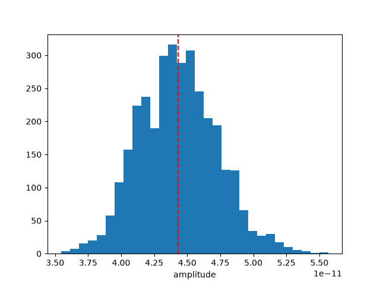

Note
Go to the end to download the full example code or to run this example in your browser via Binder.
Bayesian analysis with nested sampling#
A demonstration of a Bayesian analysis using the nested sampling technique.
Context#
1. Bayesian analysis#
Bayesian inference uses prior knowledge, in the form of a prior distribution, in order to estimate posterior probabilities which we traditionally visualise in the form of corner plots. These distributions contain more information than a maximum likelihood fit as they reveal not only the “best model” but provide a more accurate representation of errors and correlation between parameters. In particular, non-Gaussian degeneracies are complex to estimate with a maximum likelihood approach.
2. Limitations of the Markov Chain Monte Carlo approach#
A well-known approach to estimate this posterior distribution is the Markov Chain Monte Carlo (MCMC). This uses an ensemble of walkers to produce a chain of samples that after a convergence period will reach a stationary state. Once convergence is reached, the successive elements of the chain are samples of the target posterior distribution. However, the weakness of the MCMC approach lies in the “Once convergence” part. If the walkers are started far from the best likelihood region, the convergence time can be long or never reached if the walkers fall in a local minima. The choice of the initialisation point can become critical for complex models with a high number of dimensions and the ability of these walkers to escape a local minimum or to accurately describe a complex likelihood space is not guaranteed.
3. Nested sampling approach#
To overcome these issues, the nested sampling (NS) algorithm has gained traction in physics and astronomy. It is a Monte Carlo algorithm for computing an integral of the likelihood function over the prior model parameter space introduced in Skilling, 2004. The method performs this integral by evolving a collection of points through the parameter space (see recent reviews from Ashton et al., 2022, and Buchner, 2023). Without going into too many details, one important specificity of the NS method is that it starts from the entire parameter space and evolves a collection of live points to map all minima (including multiple modes if any), whereas Markov Chain Monte Carlo methods require an initialisation point and the walkers will explore the local likelihood. The ability of these walkers to escape a local minimum or to accurately describe a complex likelihood space is not guaranteed. This is a fundamental difference with MCMC or Minuit which will only ever probe the vicinity along their minimisation paths and do not have an overview of the global likelihood landscape. The analysis using the NS framework is more CPU time consuming than a standard classical fit, but it provides the full posterior distribution for all parameters, which is out of reach with traditional fitting techniques (N*(N-1)/2 contour plots to generate). In addition, it is more robust to the choice of initialisation, requires less human intervention and is therefore readily integrated in pipeline analysis. In Gammapy, we provide several NS backends: UltraNest and Nautilus. UltraNest is a package that implements the NS algorithm and is used in many astrophysical applications. Nautilus is a more recent implementation of the NS algorithm that exploits neural networks to learn a likelihood function emulator to propose new live points. It is designed to be faster and more efficient than UltraNest, especially for high-dimensional problems. For a nice visualisation of the NS method see here: sampling visualisation. And for a tutorial of UltraNest applied to X-ray fitting with concrete examples and questions see: BXA Tutorial.
See the UltraNest docs here). Note: please cite UltraNest if used for a paper If you are using the “UltraNest” library for a paper, please follow its citation scheme: Cite UltraNest.
See the Nautilus docs here). Note: please cite Nautilus if used for a paper If you are using the “Nautilus” library for a paper, please follow its citation scheme: Cite Nautilus.
Proposed approach#
In this example, we will perform a Bayesian analysis with multiple 1D spectra of the Crab nebula data and investigate their posterior distributions.
Setup#
As usual, we’ll start with some setup …
import matplotlib.pyplot as plt
import numpy as np
import astropy.units as u
from gammapy.datasets import Datasets
from gammapy.datasets import SpectrumDatasetOnOff
from gammapy.modeling.models import (
SkyModel,
UniformPrior,
LogUniformPrior,
)
from gammapy.modeling.sampler import Sampler
from gammapy.estimators import FluxCollectionEstimator
from gammapy.visualization import plot_samples_violin_vs_energy
Loading the spectral datasets#
Here we will load a few Crab 1D spectral data for which we will do a fit.
Model definition#
Now we want to define the spectral model that will be fitted to the data. The Crab spectra will be fitted here with a simple powerlaw for simplicity.
model = SkyModel.create(spectral_model="pl", name="crab")
Warning
Priors definition: Unlike a traditional fit where priors on the parameters are optional, here it is inherent to the Bayesian approach and are therefore mandatory.
In this case we will set (min,max) prior that will define the
boundaries in which the sampling will be performed.
Note that it is usually recommended to use a LogUniformPrior for
the parameters that have a large amplitude range like the
amplitude parameter.
A UniformPrior means that the samples will be drawn with uniform
probability between the (min,max) values in the linear or log space
in the case of a LogUniformPrior.
model.spectral_model.amplitude.prior = LogUniformPrior(min=1e-12, max=1e-10)
model.spectral_model.index.prior = UniformPrior(min=1, max=5)
datasets.models = [model]
print(datasets.models)
DatasetModels
Component 0: SkyModel
Name : crab
Datasets names : None
Spectral model type : PowerLawSpectralModel
Spatial model type :
Temporal model type :
Parameters:
index : 2.000 +/- 0.00
amplitude : 1.00e-12 +/- 0.0e+00 1 / (TeV s cm2)
reference (frozen): 1.000 TeV
Defining the sampler and options#
As for the Fit object, the Sampler object can receive
different backends.
The Sampler comes with “reasonable” default parameters, but you can
change them via the options dictionary, using the backend’s own option names.
Gammapy passes each option to the backend sampler constructor or to its run method.
Here is a short description of the most relevant UltraNest options that you
could change:
min_num_live_points: minimum number of live points throughout the run. More points allow to discover multiple peaks if existing, but is slower. To test the Prior boundaries and for debugging, a lower number (~100) can be used before a production run with more points (~400 or more).frac_remain: the cut-off condition for the integration, set by the maximum allowed fraction of posterior mass left in the live points vs the dead points. High values (e.g., 0.5) are faster and can be used if the posterior distribution is a relatively simple shape. A low value (1e-1, 1e-2) is optimal for finding peaks, but slower.log_dir: directory where the output files will be stored. If set to None, no files will be written. If set to a string, a directory will be created containing the ongoing status of the run and final results. For time consuming analysis, it is highly recommended to use that option to monitor the run and restart it in case of a crash (withresume=True).
More information about the UltraNest options can be found in the UltraNest docs.
More information about the Nautilus options can be found in the Nautilus docs.
A few useful options for Nautilus are:
n_live: number of live points. Equivalent ofmin_num_live_pointsin UltraNest. Due to a different methodology the recommended number of live points should be higher than in UltraNest (1000-3000) while still being faster in high-dimensional problems.f_live: fraction of the evidence from live points to use for convergence. Equivalent offrac_remainin UltraNest.pool: Pool used for parallelization of likelihood calls and sampler calculations.filepath: file path with .hdf5 extension (not directory path) where the output files will be stored.
Backend comparison: For a comparison between the two backends methods, see here. For a gamma-ray analysis, current testing shows that UltraNest can be faster (or equivalent) than Nautilus for low-dimensional problems (1-5 parameters) and Nautilus is faster for high-dimensional problems (>10 parameters) but this of course case specific. If your analysis is dominated by likelihood evaluation time, the parallelisation of the likelihood evaluation in Nautilus (using multiprocessing, just setting pool=nCPUs in the sampler options) has a simpler setup than UltraNest (MPI) and can be more efficient on laptops. Notably, multiprocessing with Nautilus can work in a Jupyter notebook while MPI with UltraNest is not supported in a notebook.
Important note: unlike the MCMC method, you don’t need to define the number of steps for which the sampler will run. The algorithm will automatically stop once a convergence criteria has been reached.
Next we can run the sampler on a given dataset. No options are accepted in the run method.
[ultranest] Sampling 400 live points from prior ...
Mono-modal Volume: ~exp(-4.76) * Expected Volume: exp(0.00) Quality: ok
index : +1.0|************************************************| +5.0
amplitude: +0.0e+00|*************************** * ** **** ** *******| +1.0e-10
Z=-inf(0.00%) | Like=-4304.41..-59.61 [-4304.4115..-344.5349] | it/evals=0/401 eff=0.0000% N=400
Z=-540.1(0.00%) | Like=-533.29..-59.61 [-4304.4115..-344.5349] | it/evals=33/436 eff=91.6667% N=400
Z=-533.9(0.00%) | Like=-528.90..-59.61 [-4304.4115..-344.5349] | it/evals=40/444 eff=90.9091% N=400
Z=-508.0(0.00%) | Like=-501.82..-59.61 [-4304.4115..-344.5349] | it/evals=70/480 eff=87.5000% N=400
Z=-500.4(0.00%) | Like=-494.21..-59.61 [-4304.4115..-344.5349] | it/evals=80/490 eff=88.8889% N=400
Mono-modal Volume: ~exp(-4.76) Expected Volume: exp(-0.23) Quality: ok
index : +1.0|************************************************| +5.0
amplitude: +0.0e+00|***************************** ** **** ** *******| +1.0e-10
Z=-482.9(0.00%) | Like=-475.39..-59.61 [-4304.4115..-344.5349] | it/evals=107/524 eff=86.2903% N=400
Z=-473.5(0.00%) | Like=-465.81..-59.61 [-4304.4115..-344.5349] | it/evals=120/540 eff=85.7143% N=400
Z=-449.6(0.00%) | Like=-442.20..-59.61 [-4304.4115..-344.5349] | it/evals=148/576 eff=84.0909% N=400
Z=-432.5(0.00%) | Like=-425.99..-59.61 [-4304.4115..-344.5349] | it/evals=160/590 eff=84.2105% N=400
Mono-modal Volume: ~exp(-4.76) Expected Volume: exp(-0.45) Quality: ok
index : +1.0|************************************************| +5.0
amplitude: +1.0e-12|************************************* **********| +1.0e-10
Z=-404.5(0.00%) | Like=-397.56..-59.61 [-4304.4115..-344.5349] | it/evals=188/622 eff=84.6847% N=400
Z=-397.7(0.00%) | Like=-392.46..-59.61 [-4304.4115..-344.5349] | it/evals=200/635 eff=85.1064% N=400
Z=-378.1(0.00%) | Like=-371.18..-59.61 [-4304.4115..-344.5349] | it/evals=229/670 eff=84.8148% N=400
Z=-366.1(0.00%) | Like=-360.36..-59.61 [-4304.4115..-344.5349] | it/evals=240/683 eff=84.8057% N=400
Mono-modal Volume: ~exp(-4.95) * Expected Volume: exp(-0.67) Quality: ok
index : +1.0| **********************************************| +5.0
amplitude: +1.0e-12| ************************************ **********| +1.0e-10
Z=-339.9(0.00%) | Like=-333.87..-59.61 [-344.4953..-188.7367] | it/evals=270/718 eff=84.9057% N=400
Z=-328.7(0.00%) | Like=-321.82..-59.61 [-344.4953..-188.7367] | it/evals=280/730 eff=84.8485% N=400
Z=-304.1(0.00%) | Like=-297.10..-59.61 [-344.4953..-188.7367] | it/evals=313/768 eff=85.0543% N=400
Z=-300.6(0.00%) | Like=-294.78..-59.61 [-344.4953..-188.7367] | it/evals=320/779 eff=84.4327% N=400
Z=-279.7(0.00%) | Like=-271.82..-59.61 [-344.4953..-188.7367] | it/evals=347/813 eff=84.0194% N=400
Mono-modal Volume: ~exp(-5.10) * Expected Volume: exp(-0.90) Quality: ok
index : +1.0| ********************************************| +5.0
amplitude: +1.0e-12| ******************************************** *| +1.0e-10
Z=-273.7(0.00%) | Like=-266.01..-59.61 [-344.4953..-188.7367] | it/evals=360/834 eff=82.9493% N=400
Z=-257.8(0.00%) | Like=-250.67..-59.61 [-344.4953..-188.7367] | it/evals=389/869 eff=82.9424% N=400
Z=-250.9(0.00%) | Like=-244.39..-59.61 [-344.4953..-188.7367] | it/evals=400/884 eff=82.6446% N=400
Z=-232.9(0.00%) | Like=-226.31..-59.61 [-344.4953..-188.7367] | it/evals=430/920 eff=82.6923% N=400
Z=-228.4(0.00%) | Like=-221.70..-59.61 [-344.4953..-188.7367] | it/evals=440/933 eff=82.5516% N=400
Mono-modal Volume: ~exp(-5.44) * Expected Volume: exp(-1.12) Quality: ok
index : +1.0| ******************************************| +5.0
amplitude: +1.0e-12| ******************************************* *| +1.0e-10
Z=-224.5(0.00%) | Like=-218.09..-59.61 [-344.4953..-188.7367] | it/evals=450/945 eff=82.5688% N=400
Z=-210.7(0.00%) | Like=-204.26..-59.61 [-344.4953..-188.7367] | it/evals=480/981 eff=82.6162% N=400
Z=-205.3(0.00%) | Like=-198.58..-58.80 [-344.4953..-188.7367] | it/evals=500/1008 eff=82.2368% N=400
Z=-199.1(0.00%) | Like=-192.37..-58.80 [-344.4953..-188.7367] | it/evals=520/1035 eff=81.8898% N=400
Mono-modal Volume: ~exp(-5.93) * Expected Volume: exp(-1.35) Quality: ok
index : +1.0| *****************************************| +5.0
amplitude: +1.0e-12| ****************************************** *| +1.0e-10
Z=-194.6(0.00%) | Like=-188.37..-58.80 [-188.3772..-136.3866] | it/evals=540/1065 eff=81.2030% N=400
Z=-189.2(0.00%) | Like=-183.38..-58.80 [-188.3772..-136.3866] | it/evals=560/1088 eff=81.3953% N=400
Z=-184.1(0.00%) | Like=-178.29..-58.80 [-188.3772..-136.3866] | it/evals=589/1125 eff=81.2414% N=400
Z=-181.4(0.00%) | Like=-174.75..-58.80 [-188.3772..-136.3866] | it/evals=600/1136 eff=81.5217% N=400
Z=-174.9(0.00%) | Like=-168.85..-58.80 [-188.3772..-136.3866] | it/evals=627/1172 eff=81.2176% N=400
Mono-modal Volume: ~exp(-5.93) Expected Volume: exp(-1.57) Quality: ok
index : +1.0| ************************************ | +5.0
amplitude: +1.0e-12| ***************************************** *| +1.0e-10
Z=-172.7(0.00%) | Like=-167.25..-58.80 [-188.3772..-136.3866] | it/evals=640/1191 eff=80.9102% N=400
Z=-168.1(0.00%) | Like=-162.21..-58.80 [-188.3772..-136.3866] | it/evals=670/1227 eff=81.0157% N=400
Z=-165.2(0.00%) | Like=-158.73..-58.80 [-188.3772..-136.3866] | it/evals=680/1240 eff=80.9524% N=400
Z=-159.6(0.00%) | Like=-153.63..-58.80 [-188.3772..-136.3866] | it/evals=709/1278 eff=80.7517% N=400
Mono-modal Volume: ~exp(-5.93) Expected Volume: exp(-1.80) Quality: ok
index : +1.0| ******************************* | +5.0
amplitude: +1.0e-12| **************************************** | +1.0e-10
Z=-157.5(0.00%) | Like=-151.44..-58.80 [-188.3772..-136.3866] | it/evals=720/1293 eff=80.6271% N=400
Z=-151.3(0.00%) | Like=-145.07..-58.80 [-188.3772..-136.3866] | it/evals=752/1329 eff=80.9473% N=400
Z=-149.7(0.00%) | Like=-143.39..-58.80 [-188.3772..-136.3866] | it/evals=760/1337 eff=81.1099% N=400
Z=-145.6(0.00%) | Like=-139.34..-58.80 [-188.3772..-136.3866] | it/evals=782/1374 eff=80.2875% N=400
Z=-143.2(0.00%) | Like=-137.32..-58.80 [-188.3772..-136.3866] | it/evals=800/1395 eff=80.4020% N=400
Mono-modal Volume: ~exp(-6.18) * Expected Volume: exp(-2.02) Quality: ok
index : +1.0| **************************** +4.1 | +5.0
amplitude: +1.0e-12| ************************************* | +1.0e-10
Z=-142.0(0.00%) | Like=-135.98..-58.80 [-136.3543..-101.0605] | it/evals=810/1408 eff=80.3571% N=400
Z=-138.1(0.00%) | Like=-131.54..-58.80 [-136.3543..-101.0605] | it/evals=833/1445 eff=79.7129% N=400
Z=-136.7(0.00%) | Like=-130.05..-58.80 [-136.3543..-101.0605] | it/evals=840/1454 eff=79.6964% N=400
Z=-132.7(0.00%) | Like=-126.95..-58.80 [-136.3543..-101.0605] | it/evals=869/1490 eff=79.7248% N=400
Z=-131.7(0.00%) | Like=-125.98..-58.80 [-136.3543..-101.0605] | it/evals=880/1503 eff=79.7824% N=400
Mono-modal Volume: ~exp(-6.49) * Expected Volume: exp(-2.25) Quality: ok
index : +1.0| ************************* +3.9 | +5.0
amplitude: +1.0e-12| ********************************* | +1.0e-10
Z=-128.6(0.00%) | Like=-122.19..-58.80 [-136.3543..-101.0605] | it/evals=900/1534 eff=79.3651% N=400
Z=-125.3(0.00%) | Like=-118.49..-58.80 [-136.3543..-101.0605] | it/evals=920/1556 eff=79.5848% N=400
Z=-120.9(0.00%) | Like=-114.74..-58.80 [-136.3543..-101.0605] | it/evals=944/1592 eff=79.1946% N=400
Z=-118.9(0.00%) | Like=-112.24..-58.80 [-136.3543..-101.0605] | it/evals=960/1616 eff=78.9474% N=400
Z=-115.8(0.00%) | Like=-109.68..-58.80 [-136.3543..-101.0605] | it/evals=985/1652 eff=78.6741% N=400
Mono-modal Volume: ~exp(-6.78) * Expected Volume: exp(-2.47) Quality: ok
index : +1.0| +2.0 ********************** +3.7 | +5.0
amplitude: +1.0e-12| ****************************** | +1.0e-10
Z=-115.3(0.00%) | Like=-108.76..-58.80 [-136.3543..-101.0605] | it/evals=990/1657 eff=78.7589% N=400
Z=-114.0(0.00%) | Like=-107.73..-58.80 [-136.3543..-101.0605] | it/evals=1000/1669 eff=78.8022% N=400
Z=-111.1(0.00%) | Like=-105.22..-58.80 [-136.3543..-101.0605] | it/evals=1029/1703 eff=78.9716% N=400
Z=-110.3(0.00%) | Like=-104.34..-58.80 [-136.3543..-101.0605] | it/evals=1040/1719 eff=78.8476% N=400
Z=-108.0(0.00%) | Like=-101.49..-58.80 [-136.3543..-101.0605] | it/evals=1069/1758 eff=78.7187% N=400
Mono-modal Volume: ~exp(-6.99) * Expected Volume: exp(-2.70) Quality: ok
index : +1.0| +2.0 ******************* +3.6 | +5.0
amplitude: +1.0e-12| *************************** +7.6e-11 | +1.0e-10
Z=-106.6(0.00%) | Like=-99.50..-58.80 [-100.9397..-83.1870] | it/evals=1080/1772 eff=78.7172% N=400
Z=-103.2(0.00%) | Like=-97.11..-58.80 [-100.9397..-83.1870] | it/evals=1110/1809 eff=78.7793% N=400
Z=-102.5(0.00%) | Like=-96.13..-58.80 [-100.9397..-83.1870] | it/evals=1120/1821 eff=78.8177% N=400
Z=-100.0(0.00%) | Like=-93.39..-58.80 [-100.9397..-83.1870] | it/evals=1149/1857 eff=78.8607% N=400
Z=-99.0(0.00%) | Like=-92.61..-58.80 [-100.9397..-83.1870] | it/evals=1160/1872 eff=78.8043% N=400
Mono-modal Volume: ~exp(-7.11) * Expected Volume: exp(-2.92) Quality: ok
index : +1.0| +2.1 ***************** +3.4 | +5.0
amplitude: +1.0e-12| +2.4e-11 ************************* +7.3e-11 | +1.0e-10
Z=-98.2(0.00%) | Like=-91.78..-58.80 [-100.9397..-83.1870] | it/evals=1170/1891 eff=78.4708% N=400
Z=-96.7(0.00%) | Like=-90.61..-58.80 [-100.9397..-83.1870] | it/evals=1194/1925 eff=78.2951% N=400
Z=-96.4(0.00%) | Like=-90.16..-58.80 [-100.9397..-83.1870] | it/evals=1200/1933 eff=78.2779% N=400
Z=-94.8(0.00%) | Like=-88.72..-58.76 [-100.9397..-83.1870] | it/evals=1228/1969 eff=78.2664% N=400
Z=-94.1(0.00%) | Like=-87.69..-58.76 [-100.9397..-83.1870] | it/evals=1240/1983 eff=78.3323% N=400
Mono-modal Volume: ~exp(-7.31) * Expected Volume: exp(-3.15) Quality: ok
index : +1.0| +2.1 **************** +3.4 | +5.0
amplitude: +1.0e-12| +2.6e-11 *********************** +7.1e-11 | +1.0e-10
Z=-93.0(0.00%) | Like=-86.85..-58.76 [-100.9397..-83.1870] | it/evals=1260/2009 eff=78.3095% N=400
Z=-92.1(0.00%) | Like=-86.04..-58.76 [-100.9397..-83.1870] | it/evals=1280/2037 eff=78.1918% N=400
Z=-90.6(0.00%) | Like=-84.20..-58.76 [-100.9397..-83.1870] | it/evals=1309/2072 eff=78.2895% N=400
Z=-90.0(0.00%) | Like=-83.59..-58.76 [-100.9397..-83.1870] | it/evals=1320/2090 eff=78.1065% N=400
Z=-88.7(0.00%) | Like=-82.22..-58.76 [-83.1864..-71.6430] | it/evals=1345/2126 eff=77.9258% N=400
Mono-modal Volume: ~exp(-7.31) Expected Volume: exp(-3.37) Quality: ok
index : +1.0| +2.2 ************** +3.3 | +5.0
amplitude: +1.0e-12| +2.7e-11 ********************* +6.8e-11 | +1.0e-10
Z=-88.0(0.00%) | Like=-81.52..-58.76 [-83.1864..-71.6430] | it/evals=1360/2152 eff=77.6256% N=400
Z=-86.7(0.00%) | Like=-80.08..-58.76 [-83.1864..-71.6430] | it/evals=1383/2188 eff=77.3490% N=400
Z=-85.5(0.00%) | Like=-78.69..-58.76 [-83.1864..-71.6430] | it/evals=1400/2207 eff=77.4765% N=400
Z=-84.2(0.00%) | Like=-77.66..-58.76 [-83.1864..-71.6430] | it/evals=1423/2244 eff=77.1692% N=400
Mono-modal Volume: ~exp(-7.75) * Expected Volume: exp(-3.60) Quality: ok
index : +1.0| +2.2 ************* +3.2 | +5.0
amplitude: +1.0e-12| +2.9e-11 ****************** +6.4e-11 | +1.0e-10
Z=-83.3(0.00%) | Like=-76.71..-58.76 [-83.1864..-71.6430] | it/evals=1440/2267 eff=77.1291% N=400
Z=-82.0(0.00%) | Like=-75.65..-58.76 [-83.1864..-71.6430] | it/evals=1467/2303 eff=77.0888% N=400
Z=-81.6(0.00%) | Like=-75.37..-58.76 [-83.1864..-71.6430] | it/evals=1480/2317 eff=77.2040% N=400
Z=-80.7(0.00%) | Like=-73.99..-58.76 [-83.1864..-71.6430] | it/evals=1506/2354 eff=77.0727% N=400
Z=-80.1(0.00%) | Like=-73.43..-58.76 [-83.1864..-71.6430] | it/evals=1520/2374 eff=77.0010% N=400
Mono-modal Volume: ~exp(-8.04) * Expected Volume: exp(-3.82) Quality: ok
index : +1.0| +2.3 *********** +3.2 | +5.0
amplitude: +1.0e-12| +3.0e-11 **************** +6.2e-11 | +1.0e-10
Z=-79.7(0.00%) | Like=-73.17..-58.76 [-83.1864..-71.6430] | it/evals=1530/2391 eff=76.8458% N=400
Z=-78.7(0.00%) | Like=-72.29..-58.76 [-83.1864..-71.6430] | it/evals=1557/2428 eff=76.7751% N=400
Z=-78.6(0.00%) | Like=-72.22..-58.76 [-83.1864..-71.6430] | it/evals=1560/2431 eff=76.8095% N=400
Z=-77.9(0.00%) | Like=-71.60..-58.76 [-71.6304..-66.0010] | it/evals=1586/2467 eff=76.7296% N=400
Z=-77.5(0.00%) | Like=-71.14..-58.76 [-71.6304..-66.0010] | it/evals=1600/2485 eff=76.7386% N=400
Mono-modal Volume: ~exp(-8.10) * Expected Volume: exp(-4.05) Quality: ok
index : +1.0| +2.3 *********** +3.1 | +5.0
amplitude: +1.0e-12| +3.1e-11 *************** +6.0e-11 | +1.0e-10
Z=-76.9(0.00%) | Like=-70.40..-58.76 [-71.6304..-66.0010] | it/evals=1620/2514 eff=76.6320% N=400
Z=-76.4(0.00%) | Like=-69.90..-58.76 [-71.6304..-66.0010] | it/evals=1640/2544 eff=76.4925% N=400
Z=-75.6(0.00%) | Like=-69.26..-58.76 [-71.6304..-66.0010] | it/evals=1671/2580 eff=76.6514% N=400
Z=-75.4(0.00%) | Like=-68.91..-58.76 [-71.6304..-66.0010] | it/evals=1680/2591 eff=76.6773% N=400
Z=-74.8(0.01%) | Like=-68.24..-58.76 [-71.6304..-66.0010] | it/evals=1706/2626 eff=76.6397% N=400
Mono-modal Volume: ~exp(-8.38) * Expected Volume: exp(-4.27) Quality: ok
index : +1.0| +2.3 ********* +3.1 | +5.0
amplitude: +1.0e-12| +3.2e-11 ************* +5.9e-11 | +1.0e-10
Z=-74.7(0.01%) | Like=-68.15..-58.76 [-71.6304..-66.0010] | it/evals=1710/2630 eff=76.6816% N=400
Z=-74.5(0.01%) | Like=-67.97..-58.76 [-71.6304..-66.0010] | it/evals=1720/2642 eff=76.7172% N=400
Z=-73.8(0.02%) | Like=-67.25..-58.76 [-71.6304..-66.0010] | it/evals=1748/2678 eff=76.7340% N=400
Z=-73.6(0.02%) | Like=-66.90..-58.76 [-71.6304..-66.0010] | it/evals=1760/2696 eff=76.6551% N=400
Z=-73.0(0.04%) | Like=-66.32..-58.76 [-71.6304..-66.0010] | it/evals=1787/2731 eff=76.6624% N=400
Mono-modal Volume: ~exp(-8.52) * Expected Volume: exp(-4.50) Quality: ok
index : +1.0| +2.4 ********* +3.0 | +5.0
amplitude: +1.0e-12| +3.4e-11 ************ +5.6e-11 | +1.0e-10
Z=-72.7(0.06%) | Like=-66.07..-58.76 [-71.6304..-66.0010] | it/evals=1800/2754 eff=76.4656% N=400
Z=-72.2(0.09%) | Like=-65.65..-58.76 [-65.9916..-65.4626] | it/evals=1826/2789 eff=76.4337% N=400
Z=-71.9(0.12%) | Like=-65.32..-58.76 [-65.3231..-65.3016] | it/evals=1840/2806 eff=76.4755% N=400
Z=-71.5(0.18%) | Like=-64.91..-58.76 [-64.9273..-64.9102] | it/evals=1863/2841 eff=76.3212% N=400
Z=-71.2(0.24%) | Like=-64.60..-58.76 [-64.6265..-64.5973] | it/evals=1880/2864 eff=76.2987% N=400
Mono-modal Volume: ~exp(-8.86) * Expected Volume: exp(-4.73) Quality: ok
index : +1.0| +2.4 ******** +3.0 | +5.0
amplitude: +1.0e-12| +3.5e-11 *********** +5.5e-11 | +1.0e-10
Z=-71.1(0.29%) | Like=-64.54..-58.76 [-64.5360..-64.5307]*| it/evals=1890/2877 eff=76.3020% N=400
Z=-70.7(0.43%) | Like=-64.13..-58.76 [-64.1451..-64.1326] | it/evals=1918/2911 eff=76.3839% N=400
Z=-70.6(0.44%) | Like=-64.12..-58.76 [-64.1218..-64.0953] | it/evals=1920/2914 eff=76.3723% N=400
Z=-70.3(0.64%) | Like=-63.76..-58.76 [-63.7632..-63.7617]*| it/evals=1948/2949 eff=76.4221% N=400
Z=-70.1(0.73%) | Like=-63.58..-58.76 [-63.5827..-63.5760]*| it/evals=1960/2962 eff=76.5027% N=400
Mono-modal Volume: ~exp(-9.17) * Expected Volume: exp(-4.95) Quality: ok
index : +1.0| +2.4 ******* +2.9 | +5.0
amplitude: +1.0e-12| +3.6e-11 ********** +5.4e-11 | +1.0e-10
Z=-69.9(0.93%) | Like=-63.38..-58.76 [-63.3839..-63.3691] | it/evals=1980/2987 eff=76.5365% N=400
Z=-69.6(1.15%) | Like=-63.16..-58.76 [-63.1768..-63.1626] | it/evals=2000/3013 eff=76.5404% N=400
Z=-69.4(1.44%) | Like=-62.95..-58.76 [-62.9472..-62.9458]*| it/evals=2021/3040 eff=76.5530% N=400
Z=-69.2(1.73%) | Like=-62.76..-58.76 [-62.7595..-62.7488] | it/evals=2040/3066 eff=76.5191% N=400
Z=-69.1(2.06%) | Like=-62.54..-58.76 [-62.5526..-62.5350] | it/evals=2058/3101 eff=76.1940% N=400
Mono-modal Volume: ~exp(-9.32) * Expected Volume: exp(-5.18) Quality: ok
index : +1.0| +2.5 ****** +2.9 | +5.0
amplitude: +1.0e-12| +3.7e-11 ********* +5.3e-11 | +1.0e-10
Z=-68.9(2.30%) | Like=-62.40..-58.76 [-62.3958..-62.3896]*| it/evals=2070/3121 eff=76.0750% N=400
Z=-68.8(2.55%) | Like=-62.31..-58.76 [-62.3099..-62.3059]*| it/evals=2080/3131 eff=76.1626% N=400
Z=-68.6(3.30%) | Like=-62.11..-58.76 [-62.1135..-62.1121]*| it/evals=2109/3167 eff=76.2197% N=400
Z=-68.5(3.62%) | Like=-62.05..-58.76 [-62.0472..-62.0319] | it/evals=2120/3180 eff=76.2590% N=400
Z=-68.3(4.44%) | Like=-61.84..-58.76 [-61.8355..-61.8329]*| it/evals=2148/3215 eff=76.3055% N=400
Mono-modal Volume: ~exp(-9.32) Expected Volume: exp(-5.40) Quality: ok
index : +1.0| +2.5 ****** +2.9 | +5.0
amplitude: +1.0e-12| +3.7e-11 ******** +5.2e-11 | +1.0e-10
Z=-68.2(4.80%) | Like=-61.72..-58.75 [-61.7427..-61.7225] | it/evals=2160/3234 eff=76.2174% N=400
Z=-68.0(5.90%) | Like=-61.46..-58.75 [-61.4566..-61.4451] | it/evals=2186/3270 eff=76.1672% N=400
Z=-67.9(6.53%) | Like=-61.35..-58.75 [-61.3482..-61.3395]*| it/evals=2200/3289 eff=76.1509% N=400
Z=-67.8(7.56%) | Like=-61.19..-58.75 [-61.1865..-61.1844]*| it/evals=2221/3327 eff=75.8797% N=400
Z=-67.6(8.66%) | Like=-61.08..-58.75 [-61.0812..-61.0778]*| it/evals=2240/3358 eff=75.7268% N=400
Mono-modal Volume: ~exp(-9.59) * Expected Volume: exp(-5.63) Quality: ok
index : +1.0| +2.5 ***** +2.8 | +5.0
amplitude: +1.0e-12| +3.8e-11 ******* +5.1e-11 | +1.0e-10
Z=-67.6(9.24%) | Like=-61.03..-58.75 [-61.0295..-61.0278]*| it/evals=2250/3372 eff=75.7066% N=400
Z=-67.4(10.95%) | Like=-60.84..-58.75 [-60.8537..-60.8415] | it/evals=2280/3405 eff=75.8735% N=400
Z=-67.2(12.76%) | Like=-60.74..-58.75 [-60.7401..-60.7370]*| it/evals=2308/3441 eff=75.8961% N=400
Z=-67.2(13.49%) | Like=-60.67..-58.75 [-60.6695..-60.6482] | it/evals=2320/3458 eff=75.8666% N=400
Mono-modal Volume: ~exp(-10.25) * Expected Volume: exp(-5.85) Quality: ok
index : +1.0| +2.5 **** +2.8 | +5.0
amplitude: +1.0e-12| +3.9e-11 ****** +5.0e-11 | +1.0e-10
Z=-67.1(15.01%) | Like=-60.57..-58.75 [-60.5703..-60.5686]*| it/evals=2340/3492 eff=75.6792% N=400
Z=-67.0(16.50%) | Like=-60.45..-58.75 [-60.4522..-60.4435]*| it/evals=2360/3514 eff=75.7868% N=400
Z=-66.9(18.65%) | Like=-60.36..-58.75 [-60.3558..-60.3456] | it/evals=2385/3551 eff=75.6903% N=400
Z=-66.8(20.02%) | Like=-60.27..-58.75 [-60.2684..-60.2498] | it/evals=2400/3569 eff=75.7337% N=400
Z=-66.7(22.46%) | Like=-60.16..-58.75 [-60.1623..-60.1614]*| it/evals=2427/3605 eff=75.7254% N=400
Mono-modal Volume: ~exp(-10.36) * Expected Volume: exp(-6.08) Quality: ok
index : +1.0| +2.5 **** +2.8 | +5.0
amplitude: +1.0e-12| +3.9e-11 ****** +5.0e-11 | +1.0e-10
Z=-66.7(22.70%) | Like=-60.15..-58.75 [-60.1526..-60.1502]*| it/evals=2430/3611 eff=75.6774% N=400
Z=-66.6(23.61%) | Like=-60.12..-58.75 [-60.1164..-60.1153]*| it/evals=2440/3627 eff=75.6120% N=400
Z=-66.5(26.00%) | Like=-60.04..-58.75 [-60.0366..-60.0364]*| it/evals=2467/3664 eff=75.5821% N=400
Z=-66.5(27.17%) | Like=-59.99..-58.75 [-59.9911..-59.9907]*| it/evals=2480/3685 eff=75.4947% N=400
Z=-66.4(29.71%) | Like=-59.93..-58.75 [-59.9296..-59.9282]*| it/evals=2507/3722 eff=75.4666% N=400
Mono-modal Volume: ~exp(-10.36) Expected Volume: exp(-6.30) Quality: ok
index : +1.0| +2.5 **** +2.8 | +5.0
amplitude: +1.0e-12| +4.0e-11 ****** +4.9e-11 | +1.0e-10
Z=-66.4(30.87%) | Like=-59.89..-58.75 [-59.8889..-59.8878]*| it/evals=2520/3738 eff=75.4943% N=400
Z=-66.3(32.90%) | Like=-59.82..-58.75 [-59.8229..-59.8206]*| it/evals=2540/3765 eff=75.4829% N=400
Z=-66.3(34.73%) | Like=-59.76..-58.75 [-59.7609..-59.7606]*| it/evals=2560/3798 eff=75.3384% N=400
Z=-66.2(36.95%) | Like=-59.70..-58.75 [-59.7029..-59.7024]*| it/evals=2583/3837 eff=75.1527% N=400
Z=-66.2(38.62%) | Like=-59.68..-58.75 [-59.6803..-59.6794]*| it/evals=2600/3860 eff=75.1445% N=400
Mono-modal Volume: ~exp(-10.36) Expected Volume: exp(-6.53) Quality: ok
index : +1.0| +2.6 **** +2.8 | +5.0
amplitude: +1.0e-12| +4.0e-11 ***** +4.9e-11 | +1.0e-10
Z=-66.1(40.13%) | Like=-59.64..-58.75 [-59.6434..-59.6418]*| it/evals=2618/3895 eff=74.9070% N=400
Z=-66.1(42.07%) | Like=-59.60..-58.75 [-59.5977..-59.5946]*| it/evals=2640/3927 eff=74.8511% N=400
Z=-66.0(43.98%) | Like=-59.56..-58.75 [-59.5628..-59.5553]*| it/evals=2661/3965 eff=74.6424% N=400
Z=-66.0(45.63%) | Like=-59.51..-58.75 [-59.5148..-59.5141]*| it/evals=2680/3992 eff=74.6102% N=400
Mono-modal Volume: ~exp(-10.91) * Expected Volume: exp(-6.75) Quality: ok
index : +1.0| +2.6 **** +2.8 | +5.0
amplitude: +1.0e-12| +4.1e-11 **** +4.8e-11 | +1.0e-10
Z=-65.9(47.33%) | Like=-59.47..-58.75 [-59.4748..-59.4727]*| it/evals=2700/4021 eff=74.5650% N=400
Z=-65.9(49.14%) | Like=-59.43..-58.75 [-59.4328..-59.4312]*| it/evals=2720/4048 eff=74.5614% N=400
Z=-65.9(51.56%) | Like=-59.38..-58.75 [-59.3832..-59.3817]*| it/evals=2748/4084 eff=74.5928% N=400
Z=-65.8(52.62%) | Like=-59.36..-58.75 [-59.3646..-59.3645]*| it/evals=2760/4101 eff=74.5744% N=400
Z=-65.8(54.55%) | Like=-59.33..-58.75 [-59.3327..-59.3279]*| it/evals=2783/4137 eff=74.4715% N=400
Mono-modal Volume: ~exp(-11.18) * Expected Volume: exp(-6.98) Quality: ok
index : +1.0| +2.6 **** +2.8 | +5.0
amplitude: +1.0e-12| +4.1e-11 **** +4.8e-11 | +1.0e-10
Z=-65.8(55.11%) | Like=-59.31..-58.75 [-59.3148..-59.3135]*| it/evals=2790/4149 eff=74.4198% N=400
Z=-65.8(55.92%) | Like=-59.30..-58.75 [-59.3033..-59.2999]*| it/evals=2800/4165 eff=74.3692% N=400
Z=-65.7(58.15%) | Like=-59.26..-58.75 [-59.2626..-59.2616]*| it/evals=2828/4201 eff=74.4015% N=400
Z=-65.7(59.14%) | Like=-59.25..-58.75 [-59.2473..-59.2457]*| it/evals=2840/4215 eff=74.4430% N=400
Z=-65.7(60.98%) | Like=-59.22..-58.75 [-59.2155..-59.2145]*| it/evals=2863/4251 eff=74.3443% N=400
Mono-modal Volume: ~exp(-11.37) * Expected Volume: exp(-7.20) Quality: ok
index : +1.0| +2.6 ** +2.7 | +5.0
amplitude: +1.0e-12| +4.2e-11 **** +4.7e-11 | +1.0e-10
Z=-65.7(62.26%) | Like=-59.19..-58.75 [-59.1941..-59.1939]*| it/evals=2880/4275 eff=74.3226% N=400
Z=-65.6(64.33%) | Like=-59.16..-58.75 [-59.1585..-59.1583]*| it/evals=2908/4311 eff=74.3544% N=400
Z=-65.6(65.17%) | Like=-59.15..-58.75 [-59.1511..-59.1493]*| it/evals=2920/4329 eff=74.3192% N=400
Z=-65.6(67.12%) | Like=-59.12..-58.75 [-59.1230..-59.1212]*| it/evals=2948/4365 eff=74.3506% N=400
Z=-65.6(67.94%) | Like=-59.11..-58.75 [-59.1138..-59.1134]*| it/evals=2960/4379 eff=74.3906% N=400
Mono-modal Volume: ~exp(-11.78) * Expected Volume: exp(-7.43) Quality: ok
index : +1.0| +2.6 ** +2.7 | +5.0
amplitude: +1.0e-12| +4.2e-11 **** +4.7e-11 | +1.0e-10
Z=-65.6(68.60%) | Like=-59.11..-58.75 [-59.1052..-59.1041]*| it/evals=2970/4395 eff=74.3429% N=400
[ultranest] Explored until L=-6e+01
[ultranest] Likelihood function evaluations: 4420
[ultranest] logZ = -65.19 +- 0.07297
[ultranest] Effective samples strategy satisfied (ESS = 1309.9, need >400)
[ultranest] Posterior uncertainty strategy is satisfied (KL: 0.46+-0.07 nat, need <0.50 nat)
[ultranest] Evidency uncertainty strategy is satisfied (dlogz=0.27, need <0.5)
[ultranest] logZ error budget: single: 0.12 bs:0.07 tail:0.26 total:0.27 required:<0.50
[ultranest] done iterating.
logZ = -65.191 +- 0.299
single instance: logZ = -65.191 +- 0.117
bootstrapped : logZ = -65.190 +- 0.144
tail : logZ = +- 0.262
insert order U test : converged: True correlation: inf iterations
index : 2.365 │ ▁▁ ▁▁▁▁▂▂▃▃▄▅▆▇▇▇▆▅▅▅▃▃▂▂▁▁▁▁▁▁▁▁▁ ▁ │3.068 2.674 +- 0.085
amplitude : 0.0000000000330│ ▁▁ ▁▁▁▁▁▁▂▃▃▅▅▅▆▇▇▆▇▆▆▅▃▄▃▂▂▂▁▁▁▁▁▁▁▁ │0.0000000000561 0.0000000000444 +- 0.0000000000030
Understanding the outputs#
In the Jupyter notebook, you should be able to see an interactive visualisation of how the parameter space shrinks which starts from the (min,max) shrinks down towards the optimal parameters.
The output above is filled with interesting information. Here we provide a short description of the most relevant information provided above. For more detailed information see the UltraNest docs.
During the sampling
Z=-68.8(0.53%) | Like=-63.96..-58.75 [-63.9570..-63.9539]*| it/evals=640/1068 eff=73.7327% N=300
Some important information here is:
Progress (0.53%): the completed fraction of the integral. This is not a time progress bar. Stays at zero for a good fraction of the run.
Efficiency (eff value) of the sampling: this indicates out of the proposed new points, how many were accepted. If your efficiency is too small (<<1%), maybe you should revise your priors (e.g use a LogUniform prior for the normalisation).
Final outputs
The final lines indicate that all three “convergence” strategies are satisfied (samples, posterior uncertainty, and evidence uncertainty).
logZ = -65.104 +- 0.292
The main goal of the Nested sampling algorithm is to estimate Z (the Bayesian evidence) which is given above together with an uncertainty. In a similar way to deltaLogLike and deltaAIC, deltaLogZ values can be used for model comparison. For more information see : on the use of the evidence for model comparison. An interesting comparison of the efficiency and false discovery rate of model selection with deltaLogLike and deltaLogZ is given in Appendix C of Buchner et al., 2014.
Results stored on disk
if log_dir is set to a name where the results will be stored, then
a directory is created containing many useful results and plots.
A description of these outputs is given in the Ultranest
docs.
Results#
Within a Bayesian analysis, the concept of best-fit has to be viewed differently from what is done in a gradient descent fit.
The output of the Bayesian analysis is the posterior distribution and there is no “best-fit” output. One has to define, based on the posteriors, what we want to consider as “best-fit” and several options are possible:
the mean of the distribution
the median
the lowest likelihood value
By default the DatasetModels will be updated with the mean of
the posterior distributions.
print(result_joint.models)
DatasetModels
Component 0: SkyModel
Name : crab
Datasets names : None
Spectral model type : PowerLawSpectralModel
Spatial model type :
Temporal model type :
Parameters:
index : 2.674 +/- 0.08
amplitude : 4.44e-11 +/- 3.0e-12 1 / (TeV s cm2)
reference (frozen): 1.000 TeV
The Sampler class returns a very rich dictionary.
The most “standard” information about the posterior distributions can
be found in :
print(result_joint.sampler_results["posterior"])
{'mean': [2.6744316304415663, 4.4424827336763323e-11], 'stdev': [0.08464690648435663, 3.0280172919590293e-12], 'median': [2.671696756285102, 4.436865413185221e-11], 'errlo': [2.588560213892328, 4.126468372313609e-11], 'errup': [2.756863041439305, 4.736596736051416e-11], 'information_gain_bits': [2.6856174670331177, 3.108067492986822]}
Besides mean, errors, etc, an interesting value is the
information gain which estimates how much the posterior
distribution has shrunk with respect to the prior (i.e. how much
we’ve learned). A value < 1 means that the parameter is poorly
constrained within the prior range (we haven’t learned much with respect to our prior assumption).
For a physical interpretation of the information gain see this
example.
The SamplerResult dictionary contains also other interesting
information :
print(result_joint.sampler_results.keys())
dict_keys(['niter', 'logz', 'logzerr', 'logz_bs', 'logz_single', 'logzerr_tail', 'logzerr_bs', 'ess', 'H', 'Herr', 'posterior', 'weighted_samples', 'samples', 'maximum_likelihood', 'ncall', 'paramnames', 'logzerr_single', 'insertion_order_MWW_test'])
Of particular interest, the samples used in the process to approximate the posterior distribution can be accessed via :
for i, n in enumerate(model.parameters.free_parameters.names):
s = result_joint.samples[:, i]
fig, ax = plt.subplots()
ax.hist(s, bins=30)
ax.axvline(np.mean(s), ls="--", color="red")
ax.set_xlabel(n)
plt.show()


While the above plots are interesting, the real strength of the Bayesian analysis is to visualise all parameters correlations which is usually done using “corner plots”. Ultranest corner plot function is a wrapper around the corner package. See the above link for optional keywords. Other packages exist for corner plots, like chainconsumer which is discussed later in this tutorial.
from ultranest.plot import cornerplot
cornerplot(
result_joint.sampler_results,
plot_datapoints=True,
plot_density=True,
bins=20,
title_fmt=".2e",
smooth=False,
)
plt.show()

Spectral model error band from samples#
To compute the spectral error band (“butterfly plots”), we will directly use the samples of the posterior distribution. This is more robust as compared to the traditional method of using the covariance matrix of the parameters which implicitly assumes Gaussian errors while for the posterior distribution there is no shape assumed. This difference can become significant when the parameter errors are non-Gaussian. For this we will need to convert the list of samples back to the spectral model parameters with the relevant units (e.g. normalisation units).
def get_samples_from_posterior(spectral_model, results):
"""
Create a list of spectral parameters with correct units
from the unitless parameters returned by the sampler.
"""
n_samples = results.samples.shape[0]
samples = []
for p in spectral_model.parameters:
try:
idx = spectral_model.parameters.free_unique_parameters.index(p)
samples.append(results.samples[:, idx] * p.unit)
except ValueError:
samples.append(np.ones(n_samples) * p.quantity)
return samples
samples = get_samples_from_posterior(datasets.models[0].spectral_model, result_joint)
Next we can provide these samples to the plot_error
method.

Individual run analysis#
Now we’ll analyse several Crab runs individually so that we can compare them.
result_0 = sampler.run(datasets[0])
result_1 = sampler.run(datasets[1])
result_2 = sampler.run(datasets[2])
[ultranest] Sampling 400 live points from prior ...
Mono-modal Volume: ~exp(-3.81) * Expected Volume: exp(0.00) Quality: ok
index : +1.0|************************************************| +5.0
amplitude: +1.0e-12|**************** ********** * *** **** ********| +1.0e-10
Z=-inf(0.00%) | Like=-1124.85..-20.64 [-1124.8477..-112.3343] | it/evals=0/401 eff=0.0000% N=400
Z=-175.9(0.00%) | Like=-170.82..-20.64 [-1124.8477..-112.3343] | it/evals=40/443 eff=93.0233% N=400
Z=-164.4(0.00%) | Like=-159.25..-20.64 [-1124.8477..-112.3343] | it/evals=80/486 eff=93.0233% N=400
Mono-modal Volume: ~exp(-4.29) * Expected Volume: exp(-0.23) Quality: ok
index : +1.0|************************************************| +5.0
amplitude: +1.0e-12|*************************** * ** ***** ********| +1.0e-10
Z=-162.1(0.00%) | Like=-157.47..-20.64 [-1124.8477..-112.3343] | it/evals=90/499 eff=90.9091% N=400
Z=-154.4(0.00%) | Like=-149.62..-20.47 [-1124.8477..-112.3343] | it/evals=120/534 eff=89.5522% N=400
Z=-142.7(0.00%) | Like=-137.39..-20.47 [-1124.8477..-112.3343] | it/evals=160/575 eff=91.4286% N=400
Mono-modal Volume: ~exp(-4.32) * Expected Volume: exp(-0.45) Quality: ok
index : +1.0| ***********************************************| +5.0
amplitude: +1.0e-12|*************************** ***** ***** ****** *| +1.0e-10
Z=-138.0(0.00%) | Like=-132.87..-20.47 [-1124.8477..-112.3343] | it/evals=180/599 eff=90.4523% N=400
Z=-131.6(0.00%) | Like=-125.90..-20.47 [-1124.8477..-112.3343] | it/evals=200/623 eff=89.6861% N=400
Z=-120.9(0.00%) | Like=-116.13..-20.47 [-1124.8477..-112.3343] | it/evals=240/677 eff=86.6426% N=400
Mono-modal Volume: ~exp(-4.94) * Expected Volume: exp(-0.67) Quality: ok
index : +1.0| *********************************************| +5.0
amplitude: +1.0e-12| ************************** ***** ***** ****** | +1.0e-10
Z=-115.9(0.00%) | Like=-111.13..-20.47 [-112.3048..-70.8231] | it/evals=270/714 eff=85.9873% N=400
Z=-114.3(0.00%) | Like=-109.36..-20.47 [-112.3048..-70.8231] | it/evals=280/727 eff=85.6269% N=400
Z=-104.6(0.00%) | Like=-99.39..-20.47 [-112.3048..-70.8231] | it/evals=320/779 eff=84.4327% N=400
Mono-modal Volume: ~exp(-5.38) * Expected Volume: exp(-0.90) Quality: ok
index : +1.0| ********************************************| +5.0
amplitude: +1.0e-12| ************************************* ****** | +1.0e-10
Z=-96.6(0.00%) | Like=-90.91..-20.47 [-112.3048..-70.8231] | it/evals=360/826 eff=84.5070% N=400
Z=-90.9(0.00%) | Like=-86.16..-20.47 [-112.3048..-70.8231] | it/evals=400/876 eff=84.0336% N=400
Z=-85.2(0.00%) | Like=-80.38..-20.47 [-112.3048..-70.8231] | it/evals=440/928 eff=83.3333% N=400
Mono-modal Volume: ~exp(-5.69) * Expected Volume: exp(-1.12) Quality: ok
index : +1.0| *******************************************| +5.0
amplitude: +1.0e-12| ************************************* *** | +1.0e-10
Z=-84.2(0.00%) | Like=-79.03..-20.47 [-112.3048..-70.8231] | it/evals=450/940 eff=83.3333% N=400
Z=-80.4(0.00%) | Like=-75.36..-20.47 [-112.3048..-70.8231] | it/evals=480/978 eff=83.0450% N=400
Z=-76.2(0.00%) | Like=-71.43..-20.47 [-112.3048..-70.8231] | it/evals=520/1027 eff=82.9346% N=400
Mono-modal Volume: ~exp(-5.72) * Expected Volume: exp(-1.35) Quality: ok
index : +1.0| **************************************** | +5.0
amplitude: +1.0e-12| ************************************ | +1.0e-10
Z=-74.6(0.00%) | Like=-69.69..-20.47 [-70.7301..-48.6049] | it/evals=540/1056 eff=82.3171% N=400
Z=-73.3(0.00%) | Like=-68.51..-20.47 [-70.7301..-48.6049] | it/evals=560/1083 eff=81.9912% N=400
Z=-70.4(0.00%) | Like=-65.68..-20.47 [-70.7301..-48.6049] | it/evals=600/1136 eff=81.5217% N=400
Mono-modal Volume: ~exp(-5.72) Expected Volume: exp(-1.57) Quality: ok
index : +1.0| *********************************** | +5.0
amplitude: +1.0e-12| ********************************** +7.7e-11 | +1.0e-10
Z=-68.2(0.00%) | Like=-63.18..-20.47 [-70.7301..-48.6049] | it/evals=638/1194 eff=80.3526% N=400
Z=-68.0(0.00%) | Like=-63.10..-20.47 [-70.7301..-48.6049] | it/evals=640/1196 eff=80.4020% N=400
Z=-64.6(0.00%) | Like=-59.57..-20.47 [-70.7301..-48.6049] | it/evals=680/1257 eff=79.3466% N=400
Mono-modal Volume: ~exp(-5.72) Expected Volume: exp(-1.80) Quality: ok
index : +1.0| ***************************** +4.1 | +5.0
amplitude: +1.0e-12| ******************************** +7.4e-11 | +1.0e-10
Z=-61.3(0.00%) | Like=-55.85..-20.47 [-70.7301..-48.6049] | it/evals=720/1312 eff=78.9474% N=400
Z=-57.7(0.00%) | Like=-52.37..-20.47 [-70.7301..-48.6049] | it/evals=760/1372 eff=78.1893% N=400
Z=-55.1(0.00%) | Like=-49.87..-20.47 [-70.7301..-48.6049] | it/evals=798/1427 eff=77.7020% N=400
Z=-55.0(0.00%) | Like=-49.67..-20.47 [-70.7301..-48.6049] | it/evals=800/1431 eff=77.5946% N=400
Mono-modal Volume: ~exp(-6.46) * Expected Volume: exp(-2.02) Quality: ok
index : +1.0| ************************** +3.9 | +5.0
amplitude: +1.0e-12| ***************************** +7.0e-11 | +1.0e-10
Z=-54.4(0.00%) | Like=-49.29..-20.47 [-70.7301..-48.6049] | it/evals=810/1443 eff=77.6606% N=400
Z=-52.6(0.00%) | Like=-47.30..-20.47 [-48.6016..-34.2270] | it/evals=840/1492 eff=76.9231% N=400
Z=-50.4(0.00%) | Like=-45.14..-20.47 [-48.6016..-34.2270] | it/evals=880/1545 eff=76.8559% N=400
Mono-modal Volume: ~exp(-6.55) * Expected Volume: exp(-2.25) Quality: ok
index : +1.0| ********************** +3.7 | +5.0
amplitude: +1.0e-12| ************************** +6.6e-11 | +1.0e-10
Z=-49.1(0.00%) | Like=-43.64..-20.47 [-48.6016..-34.2270] | it/evals=900/1569 eff=76.9889% N=400
Z=-47.9(0.00%) | Like=-42.41..-20.47 [-48.6016..-34.2270] | it/evals=920/1592 eff=77.1812% N=400
Z=-45.9(0.00%) | Like=-40.55..-20.47 [-48.6016..-34.2270] | it/evals=960/1642 eff=77.2947% N=400
Mono-modal Volume: ~exp(-6.55) Expected Volume: exp(-2.47) Quality: ok
index : +1.0| +1.9 ******************** +3.5 | +5.0
amplitude: +1.0e-12| ************************ +6.1e-11 | +1.0e-10
Z=-44.5(0.00%) | Like=-39.33..-20.47 [-48.6016..-34.2270] | it/evals=994/1699 eff=76.5204% N=400
Z=-44.3(0.00%) | Like=-39.17..-20.47 [-48.6016..-34.2270] | it/evals=1000/1708 eff=76.4526% N=400
Z=-42.7(0.00%) | Like=-37.25..-20.47 [-48.6016..-34.2270] | it/evals=1040/1762 eff=76.3583% N=400
Mono-modal Volume: ~exp(-6.96) * Expected Volume: exp(-2.70) Quality: ok
index : +1.0| +2.0 ****************** +3.4 | +5.0
amplitude: +1.0e-12| ********************* +5.8e-11 | +1.0e-10
Z=-41.1(0.00%) | Like=-35.52..-20.47 [-48.6016..-34.2270] | it/evals=1080/1819 eff=76.1099% N=400
Z=-39.6(0.00%) | Like=-34.10..-20.47 [-34.1256..-27.9411] | it/evals=1115/1865 eff=76.1092% N=400
Z=-39.4(0.00%) | Like=-33.98..-20.47 [-34.1256..-27.9411] | it/evals=1120/1871 eff=76.1387% N=400
Z=-38.1(0.00%) | Like=-32.80..-20.47 [-34.1256..-27.9411] | it/evals=1160/1929 eff=75.8666% N=400
Mono-modal Volume: ~exp(-7.17) * Expected Volume: exp(-2.92) Quality: ok
index : +1.0| +2.0 **************** +3.3 | +5.0
amplitude: +1.0e-12| ******************* +5.5e-11 | +1.0e-10
Z=-37.9(0.00%) | Like=-32.39..-20.47 [-34.1256..-27.9411] | it/evals=1170/1942 eff=75.8755% N=400
Z=-37.0(0.00%) | Like=-31.55..-20.47 [-34.1256..-27.9411] | it/evals=1200/1973 eff=76.2873% N=400
Z=-35.9(0.00%) | Like=-30.26..-20.47 [-34.1256..-27.9411] | it/evals=1240/2027 eff=76.2139% N=400
Mono-modal Volume: ~exp(-7.18) * Expected Volume: exp(-3.15) Quality: ok
index : +1.0| +2.1 *************** +3.2 | +5.0
amplitude: +1.0e-12| ***************** +5.3e-11 | +1.0e-10
Z=-35.3(0.01%) | Like=-29.84..-20.47 [-34.1256..-27.9411] | it/evals=1260/2054 eff=76.1790% N=400
Z=-34.9(0.01%) | Like=-29.50..-20.47 [-34.1256..-27.9411] | it/evals=1280/2079 eff=76.2359% N=400
Z=-34.1(0.03%) | Like=-28.70..-20.47 [-34.1256..-27.9411] | it/evals=1319/2140 eff=75.8046% N=400
Z=-34.0(0.03%) | Like=-28.61..-20.47 [-34.1256..-27.9411] | it/evals=1320/2141 eff=75.8185% N=400
Mono-modal Volume: ~exp(-7.77) * Expected Volume: exp(-3.37) Quality: ok
index : +1.0| +2.1 ************* +3.1 | +5.0
amplitude: +1.0e-12| **************** +5.1e-11 | +1.0e-10
Z=-33.5(0.05%) | Like=-28.20..-20.47 [-34.1256..-27.9411] | it/evals=1350/2179 eff=75.8853% N=400
Z=-33.3(0.06%) | Like=-28.00..-20.47 [-34.1256..-27.9411] | it/evals=1360/2194 eff=75.8082% N=400
Z=-32.7(0.12%) | Like=-27.29..-20.47 [-27.9218..-27.2868] | it/evals=1400/2245 eff=75.8808% N=400
Mono-modal Volume: ~exp(-7.77) Expected Volume: exp(-3.60) Quality: ok
index : +1.0| +2.2 ************ +3.1 | +5.0
amplitude: +1.0e-12| ************** +4.9e-11 | +1.0e-10
Z=-32.1(0.22%) | Like=-26.67..-20.47 [-26.6835..-26.6690] | it/evals=1440/2303 eff=75.6700% N=400
Z=-31.5(0.38%) | Like=-26.11..-20.47 [-26.1123..-26.1070]*| it/evals=1480/2358 eff=75.5873% N=400
Z=-31.0(0.62%) | Like=-25.59..-20.47 [-25.5859..-25.5718] | it/evals=1519/2417 eff=75.3099% N=400
Z=-31.0(0.63%) | Like=-25.57..-20.47 [-25.5859..-25.5718] | it/evals=1520/2418 eff=75.3221% N=400
Mono-modal Volume: ~exp(-7.77) Expected Volume: exp(-3.82) Quality: ok
index : +1.0| +2.2 ********** +3.0 | +5.0
amplitude: +1.0e-12| +2.4e-11 ************ +4.7e-11 | +1.0e-10
Z=-30.5(0.99%) | Like=-25.10..-20.47 [-25.1004..-25.0984]*| it/evals=1556/2475 eff=74.9880% N=400
Z=-30.5(1.03%) | Like=-25.09..-20.47 [-25.0870..-25.0813]*| it/evals=1560/2481 eff=74.9640% N=400
Z=-30.1(1.53%) | Like=-24.72..-20.47 [-24.7171..-24.7114]*| it/evals=1598/2544 eff=74.5336% N=400
Z=-30.1(1.57%) | Like=-24.68..-20.47 [-24.7114..-24.6846] | it/evals=1600/2546 eff=74.5573% N=400
Mono-modal Volume: ~exp(-8.51) * Expected Volume: exp(-4.05) Quality: ok
index : +1.0| +2.2 ********** +2.9 | +5.0
amplitude: +1.0e-12| +2.4e-11 *********** +4.6e-11 | +1.0e-10
Z=-29.9(1.92%) | Like=-24.39..-20.47 [-24.4074..-24.3924] | it/evals=1620/2578 eff=74.3802% N=400
Z=-29.7(2.33%) | Like=-24.19..-20.47 [-24.2100..-24.1857] | it/evals=1640/2600 eff=74.5455% N=400
Z=-29.3(3.37%) | Like=-23.82..-20.47 [-23.8157..-23.8061]*| it/evals=1680/2657 eff=74.4351% N=400
Mono-modal Volume: ~exp(-8.80) * Expected Volume: exp(-4.27) Quality: ok
index : +1.0| +2.3 ******** +2.9 | +5.0
amplitude: +1.0e-12| +2.5e-11 ********** +4.4e-11 | +1.0e-10
Z=-29.0(4.39%) | Like=-23.59..-20.47 [-23.5917..-23.5745] | it/evals=1710/2704 eff=74.2188% N=400
Z=-29.0(4.75%) | Like=-23.48..-20.47 [-23.4767..-23.4674]*| it/evals=1720/2714 eff=74.3302% N=400
Z=-28.7(6.55%) | Like=-23.13..-20.47 [-23.1302..-23.1279]*| it/evals=1760/2764 eff=74.4501% N=400
Mono-modal Volume: ~exp(-8.80) Expected Volume: exp(-4.50) Quality: ok
index : +1.0| +2.3 ******** +2.9 | +5.0
amplitude: +1.0e-12| +2.6e-11 ********* +4.3e-11 | +1.0e-10
Z=-28.4(8.55%) | Like=-22.88..-20.47 [-22.8822..-22.8810]*| it/evals=1800/2816 eff=74.5033% N=400
Z=-28.1(11.07%) | Like=-22.65..-20.47 [-22.6522..-22.6485]*| it/evals=1840/2871 eff=74.4638% N=400
Z=-27.9(13.79%) | Like=-22.42..-20.47 [-22.4199..-22.4190]*| it/evals=1880/2921 eff=74.5736% N=400
Mono-modal Volume: ~exp(-9.06) * Expected Volume: exp(-4.73) Quality: ok
index : +1.0| +2.3 ******* +2.8 | +5.0
amplitude: +1.0e-12| +2.7e-11 ******** +4.2e-11 | +1.0e-10
Z=-27.8(14.49%) | Like=-22.37..-20.47 [-22.3686..-22.3671]*| it/evals=1890/2938 eff=74.4681% N=400
Z=-27.7(16.78%) | Like=-22.26..-20.46 [-22.2580..-22.2565]*| it/evals=1920/2973 eff=74.6211% N=400
Z=-27.5(19.87%) | Like=-22.10..-20.46 [-22.0996..-22.0990]*| it/evals=1960/3022 eff=74.7521% N=400
Mono-modal Volume: ~exp(-9.49) * Expected Volume: exp(-4.95) Quality: ok
index : +1.0| +2.4 ****** +2.8 | +5.0
amplitude: +1.0e-12| +2.8e-11 ******** +4.1e-11 | +1.0e-10
Z=-27.4(21.46%) | Like=-22.02..-20.46 [-22.0224..-22.0205]*| it/evals=1980/3052 eff=74.6606% N=400
Z=-27.4(23.10%) | Like=-21.93..-20.46 [-21.9306..-21.9293]*| it/evals=2000/3078 eff=74.6826% N=400
Z=-27.2(26.54%) | Like=-21.80..-20.46 [-21.8030..-21.7880] | it/evals=2040/3136 eff=74.5614% N=400
Mono-modal Volume: ~exp(-9.49) Expected Volume: exp(-5.18) Quality: ok
index : +1.0| +2.4 ****** +2.8 | +5.0
amplitude: +1.0e-12| +2.8e-11 ******* +4.0e-11 | +1.0e-10
Z=-27.1(29.98%) | Like=-21.69..-20.46 [-21.6916..-21.6849]*| it/evals=2080/3190 eff=74.5520% N=400
Z=-27.0(33.67%) | Like=-21.56..-20.46 [-21.5634..-21.5622]*| it/evals=2120/3244 eff=74.5429% N=400
Mono-modal Volume: ~exp(-9.49) Expected Volume: exp(-5.40) Quality: ok
index : +1.0| +2.4 ***** +2.7 | +5.0
amplitude: +1.0e-12| +2.9e-11 ****** +4.0e-11 | +1.0e-10
Z=-26.9(37.32%) | Like=-21.47..-20.46 [-21.4685..-21.4660]*| it/evals=2160/3295 eff=74.6114% N=400
Z=-26.8(41.20%) | Like=-21.37..-20.46 [-21.3653..-21.3636]*| it/evals=2200/3345 eff=74.7029% N=400
Z=-26.7(44.49%) | Like=-21.28..-20.46 [-21.2831..-21.2769]*| it/evals=2237/3404 eff=74.4674% N=400
Z=-26.7(44.76%) | Like=-21.27..-20.46 [-21.2747..-21.2723]*| it/evals=2240/3409 eff=74.4433% N=400
Mono-modal Volume: ~exp(-10.01) * Expected Volume: exp(-5.63) Quality: ok
index : +1.0| +2.4 ***** +2.7 | +5.0
amplitude: +1.0e-12| +3.0e-11 ****** +3.9e-11 | +1.0e-10
Z=-26.7(45.65%) | Like=-21.26..-20.46 [-21.2583..-21.2579]*| it/evals=2250/3423 eff=74.4294% N=400
Z=-26.6(48.28%) | Like=-21.22..-20.46 [-21.2158..-21.2130]*| it/evals=2280/3467 eff=74.3397% N=400
Z=-26.5(51.68%) | Like=-21.15..-20.46 [-21.1461..-21.1388]*| it/evals=2320/3516 eff=74.4544% N=400
Mono-modal Volume: ~exp(-10.01) Expected Volume: exp(-5.85) Quality: ok
index : +1.0| +2.4 **** +2.7 | +5.0
amplitude: +1.0e-12| +3.0e-11 ***** +3.9e-11 | +1.0e-10
Z=-26.5(54.88%) | Like=-21.09..-20.46 [-21.0902..-21.0891]*| it/evals=2359/3570 eff=74.4164% N=400
Z=-26.5(54.95%) | Like=-21.09..-20.46 [-21.0891..-21.0845]*| it/evals=2360/3575 eff=74.3307% N=400
Z=-26.4(58.05%) | Like=-21.03..-20.46 [-21.0312..-21.0311]*| it/evals=2400/3632 eff=74.2574% N=400
Mono-modal Volume: ~exp(-10.50) * Expected Volume: exp(-6.08) Quality: ok
index : +1.0| +2.4 **** +2.7 | +5.0
amplitude: +1.0e-12| +3.0e-11 ***** +3.8e-11 | +1.0e-10
Z=-26.4(60.33%) | Like=-21.00..-20.46 [-20.9958..-20.9949]*| it/evals=2430/3678 eff=74.1306% N=400
Z=-26.4(61.08%) | Like=-20.99..-20.46 [-20.9878..-20.9850]*| it/evals=2440/3690 eff=74.1641% N=400
Z=-26.3(63.95%) | Like=-20.93..-20.46 [-20.9302..-20.9302]*| it/evals=2480/3741 eff=74.2293% N=400
Mono-modal Volume: ~exp(-10.86) * Expected Volume: exp(-6.30) Quality: ok
index : +1.0| +2.5 **** +2.7 | +5.0
amplitude: +1.0e-12| +3.1e-11 **** +3.8e-11 | +1.0e-10
Z=-26.3(66.67%) | Like=-20.88..-20.46 [-20.8844..-20.8834]*| it/evals=2520/3791 eff=74.3144% N=400
Z=-26.2(69.28%) | Like=-20.84..-20.46 [-20.8415..-20.8409]*| it/evals=2560/3845 eff=74.3106% N=400
[ultranest] Explored until L=-2e+01
[ultranest] Likelihood function evaluations: 3861
[ultranest] logZ = -25.84 +- 0.06482
[ultranest] Effective samples strategy satisfied (ESS = 1321.2, need >400)
[ultranest] Posterior uncertainty strategy is satisfied (KL: 0.46+-0.07 nat, need <0.50 nat)
[ultranest] Evidency uncertainty strategy is satisfied (dlogz=0.27, need <0.5)
[ultranest] logZ error budget: single: 0.10 bs:0.06 tail:0.26 total:0.27 required:<0.50
[ultranest] done iterating.
logZ = -25.867 +- 0.336
single instance: logZ = -25.867 +- 0.105
bootstrapped : logZ = -25.841 +- 0.211
tail : logZ = +- 0.262
insert order U test : converged: True correlation: inf iterations
index : 2.07 │ ▁▁▁▁▁▁▁▁▁▂▃▃▆▅▆▆▅▇▇▆▆▅▆▄▃▂▃▂▁▁▁▁▁▁▁▁▁ │3.09 2.57 +- 0.13
amplitude : 0.0000000000225│ ▁▁▁▁▁▁▁▃▃▅▅▆▇▇▆▇▇▆▇▅▅▄▄▃▂▂▁▁▁▁▁▁▁▁▁ ▁ │0.0000000000497 0.0000000000342 +- 0.0000000000038
[ultranest] Sampling 400 live points from prior ...
Mono-modal Volume: ~exp(-4.15) * Expected Volume: exp(0.00) Quality: ok
index : +1.0|************************************************| +5.0
amplitude: +1.0e-12|******************************* * ************ | +1.0e-10
Z=-inf(0.00%) | Like=-1161.75..-19.41 [-1161.7547..-125.8739] | it/evals=0/401 eff=0.0000% N=400
Z=-215.8(0.00%) | Like=-210.40..-19.41 [-1161.7547..-125.8739] | it/evals=40/442 eff=95.2381% N=400
Z=-199.5(0.00%) | Like=-193.38..-19.41 [-1161.7547..-125.8739] | it/evals=80/486 eff=93.0233% N=400
Mono-modal Volume: ~exp(-4.76) * Expected Volume: exp(-0.23) Quality: ok
index : +1.0|************************************************| +5.0
amplitude: +1.0e-12|******************************** ************** | +1.0e-10
Z=-196.2(0.00%) | Like=-191.40..-19.28 [-1161.7547..-125.8739] | it/evals=90/499 eff=90.9091% N=400
Z=-184.8(0.00%) | Like=-179.84..-19.28 [-1161.7547..-125.8739] | it/evals=120/535 eff=88.8889% N=400
Z=-169.1(0.00%) | Like=-164.25..-19.28 [-1161.7547..-125.8739] | it/evals=160/584 eff=86.9565% N=400
Mono-modal Volume: ~exp(-4.76) Expected Volume: exp(-0.45) Quality: ok
index : +1.0| ***********************************************| +5.0
amplitude: +1.0e-12|******************************** ************** | +1.0e-10
Z=-155.8(0.00%) | Like=-150.31..-19.28 [-1161.7547..-125.8739] | it/evals=200/629 eff=87.3362% N=400
Z=-140.7(0.00%) | Like=-135.25..-19.28 [-1161.7547..-125.8739] | it/evals=240/677 eff=86.6426% N=400
Mono-modal Volume: ~exp(-5.04) * Expected Volume: exp(-0.67) Quality: ok
index : +1.0| *********************************************| +5.0
amplitude: +1.0e-12| ****************************** ***************| +1.0e-10
Z=-128.3(0.00%) | Like=-123.07..-19.28 [-125.4772..-63.0381] | it/evals=270/711 eff=86.8167% N=400
Z=-125.0(0.00%) | Like=-119.73..-19.28 [-125.4772..-63.0381] | it/evals=280/722 eff=86.9565% N=400
Z=-112.8(0.00%) | Like=-107.80..-19.28 [-125.4772..-63.0381] | it/evals=320/766 eff=87.4317% N=400
Mono-modal Volume: ~exp(-5.43) * Expected Volume: exp(-0.90) Quality: ok
index : +1.0| *******************************************| +5.0
amplitude: +1.0e-12| *********************************************| +1.0e-10
Z=-104.0(0.00%) | Like=-98.79..-19.28 [-125.4772..-63.0381] | it/evals=360/815 eff=86.7470% N=400
Z=-93.2(0.00%) | Like=-87.64..-19.28 [-125.4772..-63.0381] | it/evals=400/866 eff=85.8369% N=400
Z=-86.0(0.00%) | Like=-80.57..-19.28 [-125.4772..-63.0381] | it/evals=440/914 eff=85.6031% N=400
Mono-modal Volume: ~exp(-5.43) Expected Volume: exp(-1.12) Quality: ok
index : +1.0| *****************************************| +5.0
amplitude: +1.0e-12| *******************************************| +1.0e-10
Z=-77.6(0.00%) | Like=-71.90..-19.28 [-125.4772..-63.0381] | it/evals=480/960 eff=85.7143% N=400
Z=-69.4(0.00%) | Like=-63.95..-19.28 [-125.4772..-63.0381] | it/evals=520/1014 eff=84.6906% N=400
Mono-modal Volume: ~exp(-5.64) * Expected Volume: exp(-1.35) Quality: ok
index : +1.0| ****************************************| +5.0
amplitude: +1.0e-12| *****************************************| +1.0e-10
Z=-67.0(0.00%) | Like=-61.69..-19.28 [-63.0320..-41.2119] | it/evals=540/1042 eff=84.1121% N=400
Z=-64.9(0.00%) | Like=-59.80..-19.28 [-63.0320..-41.2119] | it/evals=560/1070 eff=83.5821% N=400
Z=-60.6(0.00%) | Like=-55.60..-19.28 [-63.0320..-41.2119] | it/evals=600/1122 eff=83.1025% N=400
Mono-modal Volume: ~exp(-5.66) * Expected Volume: exp(-1.57) Quality: ok
index : +1.0| ***************************************| +5.0
amplitude: +1.0e-12| ****************************************| +1.0e-10
Z=-58.3(0.00%) | Like=-53.17..-19.28 [-63.0320..-41.2119] | it/evals=630/1165 eff=82.3529% N=400
Z=-57.6(0.00%) | Like=-52.56..-19.28 [-63.0320..-41.2119] | it/evals=640/1175 eff=82.5806% N=400
Z=-54.9(0.00%) | Like=-49.64..-19.28 [-63.0320..-41.2119] | it/evals=680/1229 eff=82.0265% N=400
Z=-52.3(0.00%) | Like=-46.94..-19.28 [-63.0320..-41.2119] | it/evals=719/1292 eff=80.6054% N=400
Mono-modal Volume: ~exp(-6.10) * Expected Volume: exp(-1.80) Quality: ok
index : +1.0| ********************************** | +5.0
amplitude: +1.0e-12| **************************************| +1.0e-10
Z=-52.2(0.00%) | Like=-46.73..-19.28 [-63.0320..-41.2119] | it/evals=720/1293 eff=80.6271% N=400
Z=-49.3(0.00%) | Like=-44.28..-19.28 [-63.0320..-41.2119] | it/evals=760/1346 eff=80.3383% N=400
Z=-47.2(0.00%) | Like=-42.10..-19.26 [-63.0320..-41.2119] | it/evals=800/1401 eff=79.9201% N=400
Mono-modal Volume: ~exp(-6.36) * Expected Volume: exp(-2.02) Quality: ok
index : +1.0| +2.0 ***************************** | +5.0
amplitude: +1.0e-12| +2.4e-11 *************************************| +1.0e-10
Z=-46.6(0.00%) | Like=-41.44..-19.26 [-63.0320..-41.2119] | it/evals=810/1417 eff=79.6460% N=400
Z=-45.2(0.00%) | Like=-40.04..-19.26 [-41.2052..-31.0798] | it/evals=840/1453 eff=79.7721% N=400
Z=-43.2(0.00%) | Like=-38.21..-19.25 [-41.2052..-31.0798] | it/evals=880/1506 eff=79.5660% N=400
Mono-modal Volume: ~exp(-6.59) * Expected Volume: exp(-2.25) Quality: ok
index : +1.0| +2.0 ************************* +4.1 | +5.0
amplitude: +1.0e-12| +2.7e-11 *********************************** | +1.0e-10
Z=-42.4(0.00%) | Like=-37.23..-19.25 [-41.2052..-31.0798] | it/evals=900/1535 eff=79.2952% N=400
Z=-41.5(0.00%) | Like=-36.46..-19.25 [-41.2052..-31.0798] | it/evals=920/1570 eff=78.6325% N=400
Z=-40.0(0.00%) | Like=-34.82..-19.19 [-41.2052..-31.0798] | it/evals=960/1619 eff=78.7531% N=400
Mono-modal Volume: ~exp(-6.59) Expected Volume: exp(-2.47) Quality: ok
index : +1.0| +2.1 ********************** +3.9 | +5.0
amplitude: +1.0e-12| +2.9e-11 ******************************** | +1.0e-10
Z=-38.5(0.00%) | Like=-33.41..-19.18 [-41.2052..-31.0798] | it/evals=1000/1673 eff=78.5546% N=400
Z=-37.2(0.00%) | Like=-32.13..-19.18 [-41.2052..-31.0798] | it/evals=1039/1732 eff=78.0030% N=400
Z=-37.2(0.00%) | Like=-32.11..-19.18 [-41.2052..-31.0798] | it/evals=1040/1733 eff=78.0195% N=400
Mono-modal Volume: ~exp(-6.87) * Expected Volume: exp(-2.70) Quality: ok
index : +1.0| +2.2 ******************** +3.8 | +5.0
amplitude: +1.0e-12| +3.1e-11 ***************************** | +1.0e-10
Z=-36.1(0.00%) | Like=-31.09..-19.18 [-41.2052..-31.0798] | it/evals=1080/1787 eff=77.8659% N=400
Z=-35.1(0.00%) | Like=-30.08..-19.18 [-31.0705..-26.3864] | it/evals=1120/1840 eff=77.7778% N=400
Z=-34.3(0.00%) | Like=-29.24..-19.18 [-31.0705..-26.3864] | it/evals=1160/1900 eff=77.3333% N=400
Mono-modal Volume: ~exp(-7.06) * Expected Volume: exp(-2.92) Quality: ok
index : +1.0| +2.2 ******************* +3.7 | +5.0
amplitude: +1.0e-12| +3.3e-11 ************************** | +1.0e-10
Z=-34.1(0.01%) | Like=-28.92..-19.18 [-31.0705..-26.3864] | it/evals=1170/1913 eff=77.3298% N=400
Z=-33.4(0.01%) | Like=-28.09..-19.18 [-31.0705..-26.3864] | it/evals=1200/1959 eff=76.9724% N=400
Z=-32.4(0.03%) | Like=-27.06..-19.18 [-31.0705..-26.3864] | it/evals=1240/2010 eff=77.0186% N=400
Mono-modal Volume: ~exp(-7.62) * Expected Volume: exp(-3.15) Quality: ok
index : +1.0| +2.3 **************** +3.6 | +5.0
amplitude: +1.0e-12| +3.5e-11 *********************** | +1.0e-10
Z=-32.0(0.05%) | Like=-26.78..-19.18 [-31.0705..-26.3864] | it/evals=1260/2044 eff=76.6423% N=400
Z=-31.6(0.07%) | Like=-26.45..-19.18 [-31.0705..-26.3864] | it/evals=1280/2070 eff=76.6467% N=400
Z=-30.9(0.14%) | Like=-25.58..-19.18 [-25.5826..-25.5602] | it/evals=1320/2115 eff=76.9679% N=400
Mono-modal Volume: ~exp(-7.84) * Expected Volume: exp(-3.37) Quality: ok
index : +1.0| +2.3 *************** +3.5 | +5.0
amplitude: +1.0e-12| +3.7e-11 ******************** +7.6e-11 | +1.0e-10
Z=-30.4(0.25%) | Like=-25.21..-19.18 [-25.2064..-25.1460] | it/evals=1350/2152 eff=77.0548% N=400
Z=-30.2(0.29%) | Like=-25.04..-19.18 [-25.0490..-25.0358] | it/evals=1360/2165 eff=77.0538% N=400
Z=-29.7(0.51%) | Like=-24.53..-19.18 [-24.5267..-24.5163] | it/evals=1399/2217 eff=76.9950% N=400
Z=-29.7(0.51%) | Like=-24.52..-19.18 [-24.5267..-24.5163] | it/evals=1400/2219 eff=76.9654% N=400
Mono-modal Volume: ~exp(-8.04) * Expected Volume: exp(-3.60) Quality: ok
index : +1.0| +2.4 ************* +3.4 | +5.0
amplitude: +1.0e-12| +3.8e-11 ******************* +7.5e-11 | +1.0e-10
Z=-29.2(0.82%) | Like=-24.10..-19.18 [-24.1039..-24.0901] | it/evals=1440/2270 eff=77.0053% N=400
Z=-28.8(1.20%) | Like=-23.65..-19.18 [-23.6487..-23.6483]*| it/evals=1480/2317 eff=77.2040% N=400
Z=-28.4(1.75%) | Like=-23.17..-19.18 [-23.1743..-23.1499] | it/evals=1520/2371 eff=77.1182% N=400
Mono-modal Volume: ~exp(-8.09) * Expected Volume: exp(-3.82) Quality: ok
index : +1.0| +2.4 ************ +3.3 | +5.0
amplitude: +1.0e-12| +4.0e-11 **************** +7.3e-11 | +1.0e-10
Z=-28.3(1.96%) | Like=-23.04..-19.18 [-23.0539..-23.0366] | it/evals=1530/2383 eff=77.1558% N=400
Z=-28.0(2.67%) | Like=-22.82..-19.18 [-22.8229..-22.8220]*| it/evals=1560/2426 eff=76.9990% N=400
Z=-27.6(3.78%) | Like=-22.43..-19.18 [-22.4288..-22.4199]*| it/evals=1600/2469 eff=77.3320% N=400
Mono-modal Volume: ~exp(-8.53) * Expected Volume: exp(-4.05) Quality: ok
index : +1.0| +2.4 *********** +3.3 | +5.0
amplitude: +1.0e-12| +4.2e-11 *************** +7.0e-11 | +1.0e-10
Z=-27.5(4.41%) | Like=-22.21..-19.18 [-22.2130..-22.1748] | it/evals=1620/2495 eff=77.3270% N=400
Z=-27.3(5.15%) | Like=-22.06..-19.18 [-22.0586..-22.0579]*| it/evals=1640/2524 eff=77.2128% N=400
Z=-27.0(7.01%) | Like=-21.75..-19.18 [-21.7518..-21.7492]*| it/evals=1680/2570 eff=77.4194% N=400
Mono-modal Volume: ~exp(-8.66) * Expected Volume: exp(-4.27) Quality: ok
index : +1.0| +2.5 ********** +3.2 | +5.0
amplitude: +1.0e-12| +4.3e-11 ************* +6.9e-11 | +1.0e-10
Z=-26.8(8.57%) | Like=-21.58..-19.18 [-21.5754..-21.5740]*| it/evals=1710/2612 eff=77.3056% N=400
Z=-26.7(9.17%) | Like=-21.52..-19.18 [-21.5172..-21.5069] | it/evals=1720/2626 eff=77.2686% N=400
Z=-26.5(11.72%) | Like=-21.28..-19.18 [-21.2796..-21.2712]*| it/evals=1760/2674 eff=77.3967% N=400
Mono-modal Volume: ~exp(-9.14) * Expected Volume: exp(-4.50) Quality: ok
index : +1.0| +2.5 ******** +3.2 | +5.0
amplitude: +1.0e-12| +4.4e-11 ************ +6.7e-11 | +1.0e-10
Z=-26.3(14.49%) | Like=-21.09..-19.18 [-21.0867..-21.0858]*| it/evals=1800/2726 eff=77.3861% N=400
Z=-26.1(17.39%) | Like=-20.91..-19.18 [-20.9117..-20.9087]*| it/evals=1840/2776 eff=77.4411% N=400
Z=-25.9(20.33%) | Like=-20.76..-19.18 [-20.7684..-20.7567] | it/evals=1880/2827 eff=77.4619% N=400
Mono-modal Volume: ~exp(-9.41) * Expected Volume: exp(-4.73) Quality: ok
index : +1.0| +2.5 ******** +3.1 | +5.0
amplitude: +1.0e-12| +4.5e-11 *********** +6.6e-11 | +1.0e-10
Z=-25.9(21.07%) | Like=-20.72..-19.18 [-20.7161..-20.7157]*| it/evals=1890/2839 eff=77.4908% N=400
Z=-25.8(23.60%) | Like=-20.62..-19.18 [-20.6246..-20.6241]*| it/evals=1920/2879 eff=77.4506% N=400
Z=-25.6(27.24%) | Like=-20.51..-19.18 [-20.5105..-20.5098]*| it/evals=1960/2926 eff=77.5930% N=400
Mono-modal Volume: ~exp(-9.41) Expected Volume: exp(-4.95) Quality: ok
index : +1.0| +2.6 ******** +3.1 | +5.0
amplitude: +1.0e-12| +4.6e-11 ********** +6.5e-11 | +1.0e-10
Z=-25.5(30.57%) | Like=-20.41..-19.18 [-20.4084..-20.4054]*| it/evals=2000/2984 eff=77.3994% N=400
Z=-25.4(34.30%) | Like=-20.30..-19.18 [-20.2990..-20.2985]*| it/evals=2040/3034 eff=77.4487% N=400
Mono-modal Volume: ~exp(-9.45) * Expected Volume: exp(-5.18) Quality: ok
index : +1.0| +2.6 ******* +3.1 | +5.0
amplitude: +1.0e-12| +4.7e-11 ********* +6.4e-11 | +1.0e-10
Z=-25.3(36.85%) | Like=-20.22..-19.17 [-20.2178..-20.2139]*| it/evals=2070/3082 eff=77.1812% N=400
Z=-25.3(37.77%) | Like=-20.20..-19.17 [-20.1952..-20.1936]*| it/evals=2080/3096 eff=77.1513% N=400
Z=-25.2(41.19%) | Like=-20.08..-19.17 [-20.0827..-20.0797]*| it/evals=2120/3142 eff=77.3158% N=400
Mono-modal Volume: ~exp(-9.45) Expected Volume: exp(-5.40) Quality: ok
index : +1.0| +2.6 ****** +3.0 | +5.0
amplitude: +1.0e-12| +4.8e-11 ********* +6.3e-11 | +1.0e-10
Z=-25.1(44.65%) | Like=-19.99..-19.16 [-19.9915..-19.9872]*| it/evals=2160/3193 eff=77.3362% N=400
Z=-25.1(47.96%) | Like=-19.92..-19.16 [-19.9248..-19.9225]*| it/evals=2198/3254 eff=77.0147% N=400
Z=-25.1(48.13%) | Like=-19.92..-19.16 [-19.9187..-19.9185]*| it/evals=2200/3257 eff=77.0039% N=400
Z=-25.0(51.64%) | Like=-19.84..-19.16 [-19.8399..-19.8397]*| it/evals=2240/3311 eff=76.9495% N=400
Mono-modal Volume: ~exp(-9.65) * Expected Volume: exp(-5.63) Quality: ok
index : +1.0| +2.6 ****** +3.0 | +5.0
amplitude: +1.0e-12| +4.9e-11 ******* +6.2e-11 | +1.0e-10
Z=-25.0(52.47%) | Like=-19.83..-19.16 [-19.8295..-19.8284]*| it/evals=2250/3328 eff=76.8443% N=400
Z=-24.9(54.83%) | Like=-19.77..-19.16 [-19.7697..-19.7638]*| it/evals=2280/3361 eff=77.0010% N=400
Z=-24.9(58.09%) | Like=-19.71..-19.16 [-19.7143..-19.7141]*| it/evals=2320/3410 eff=77.0764% N=400
Mono-modal Volume: ~exp(-9.96) * Expected Volume: exp(-5.85) Quality: ok
index : +1.0| +2.6 ***** +3.0 | +5.0
amplitude: +1.0e-12| +4.9e-11 ******* +6.1e-11 | +1.0e-10
Z=-24.9(59.64%) | Like=-19.68..-19.16 [-19.6785..-19.6784]*| it/evals=2340/3438 eff=77.0244% N=400
Z=-24.8(61.16%) | Like=-19.65..-19.16 [-19.6456..-19.6441]*| it/evals=2360/3459 eff=77.1494% N=400
Z=-24.8(64.08%) | Like=-19.59..-19.16 [-19.5903..-19.5891]*| it/evals=2400/3510 eff=77.1704% N=400
Mono-modal Volume: ~exp(-10.51) * Expected Volume: exp(-6.08) Quality: ok
index : +1.0| +2.7 ***** +3.0 | +5.0
amplitude: +1.0e-12| +5.0e-11 ****** +6.1e-11 | +1.0e-10
Z=-24.8(66.19%) | Like=-19.56..-19.16 [-19.5584..-19.5574]*| it/evals=2430/3554 eff=77.0450% N=400
Z=-24.7(66.89%) | Like=-19.55..-19.16 [-19.5492..-19.5489]*| it/evals=2440/3566 eff=77.0689% N=400
Z=-24.7(69.51%) | Like=-19.51..-19.16 [-19.5081..-19.5074]*| it/evals=2480/3612 eff=77.2105% N=400
[ultranest] Explored until L=-2e+01
[ultranest] Likelihood function evaluations: 3623
[ultranest] logZ = -24.33 +- 0.07656
[ultranest] Effective samples strategy satisfied (ESS = 1340.4, need >400)
[ultranest] Posterior uncertainty strategy is satisfied (KL: 0.46+-0.08 nat, need <0.50 nat)
[ultranest] Evidency uncertainty strategy is satisfied (dlogz=0.27, need <0.5)
[ultranest] logZ error budget: single: 0.10 bs:0.08 tail:0.26 total:0.27 required:<0.50
[ultranest] done iterating.
logZ = -24.343 +- 0.333
single instance: logZ = -24.343 +- 0.102
bootstrapped : logZ = -24.331 +- 0.206
tail : logZ = +- 0.262
insert order U test : converged: True correlation: inf iterations
index : 2.30 │ ▁▁▁▁▂▂▃▄▄▅▅▇▇▇▇▆▆▄▄▃▃▂▂▁▁▁▁▁▁▁▁ ▁ ▁ │3.69 2.83 +- 0.17
amplitude : 0.0000000000345│ ▁ ▁▁▁▁▂▂▂▃▄▄▄▆▆▇▇▇▆▆▅▃▄▃▂▂▁▁▁▁▁▁▁▁ ▁ │0.0000000000801 0.0000000000549 +- 0.0000000000059
[ultranest] Sampling 400 live points from prior ...
Mono-modal Volume: ~exp(-4.51) * Expected Volume: exp(0.00) Quality: ok
index : +1.0|************************************************| +5.0
amplitude: +1.0e-12|**************************** *** ******* ****** | +1.0e-10
Z=-inf(0.00%) | Like=-968.23..-13.37 [-968.2312..-83.6785] | it/evals=0/401 eff=0.0000% N=400
Z=-151.1(0.00%) | Like=-146.24..-13.37 [-968.2312..-83.6785] | it/evals=40/444 eff=90.9091% N=400
Z=-143.7(0.00%) | Like=-139.28..-13.37 [-968.2312..-83.6785] | it/evals=80/486 eff=93.0233% N=400
Mono-modal Volume: ~exp(-4.51) Expected Volume: exp(-0.23) Quality: ok
index : +1.0|************************************************| +5.0
amplitude: +1.0e-12|**************************** *** ******* ****** | +1.0e-10
Z=-135.6(0.00%) | Like=-130.55..-13.37 [-968.2312..-83.6785] | it/evals=120/539 eff=86.3309% N=400
Z=-125.7(0.00%) | Like=-120.50..-13.37 [-968.2312..-83.6785] | it/evals=160/587 eff=85.5615% N=400
Mono-modal Volume: ~exp(-4.51) Expected Volume: exp(-0.45) Quality: ok
index : +1.0|************************************************| +5.0
amplitude: +1.0e-12|******************************** ***************| +1.0e-10
Z=-114.8(0.00%) | Like=-109.38..-13.37 [-968.2312..-83.6785] | it/evals=199/645 eff=81.2245% N=400
Z=-114.5(0.00%) | Like=-109.21..-13.37 [-968.2312..-83.6785] | it/evals=200/647 eff=80.9717% N=400
Z=-105.8(0.00%) | Like=-100.59..-13.37 [-968.2312..-83.6785] | it/evals=240/701 eff=79.7342% N=400
Mono-modal Volume: ~exp(-4.93) * Expected Volume: exp(-0.67) Quality: ok
index : +1.0| **********************************************| +5.0
amplitude: +1.0e-12| ***********************************************| +1.0e-10
Z=-99.6(0.00%) | Like=-93.95..-13.37 [-968.2312..-83.6785] | it/evals=270/743 eff=78.7172% N=400
Z=-95.9(0.00%) | Like=-89.90..-13.37 [-968.2312..-83.6785] | it/evals=280/754 eff=79.0960% N=400
Z=-86.9(0.00%) | Like=-81.53..-13.37 [-83.6738..-43.2752] | it/evals=320/799 eff=80.2005% N=400
Mono-modal Volume: ~exp(-5.10) * Expected Volume: exp(-0.90) Quality: ok
index : +1.0| *********************************************| +5.0
amplitude: +1.0e-12| **********************************************| +1.0e-10
Z=-80.1(0.00%) | Like=-75.22..-13.37 [-83.6738..-43.2752] | it/evals=360/843 eff=81.2641% N=400
Z=-70.5(0.00%) | Like=-65.08..-13.37 [-83.6738..-43.2752] | it/evals=400/886 eff=82.3045% N=400
Z=-64.3(0.00%) | Like=-59.29..-13.37 [-83.6738..-43.2752] | it/evals=440/938 eff=81.7844% N=400
Mono-modal Volume: ~exp(-5.29) * Expected Volume: exp(-1.12) Quality: ok
index : +1.0| ******************************************| +5.0
amplitude: +1.0e-12| *********************************************| +1.0e-10
Z=-63.1(0.00%) | Like=-58.15..-13.37 [-83.6738..-43.2752] | it/evals=450/952 eff=81.5217% N=400
Z=-59.6(0.00%) | Like=-54.61..-13.37 [-83.6738..-43.2752] | it/evals=480/990 eff=81.3559% N=400
Z=-54.6(0.00%) | Like=-49.55..-13.37 [-83.6738..-43.2752] | it/evals=520/1048 eff=80.2469% N=400
Mono-modal Volume: ~exp(-5.77) * Expected Volume: exp(-1.35) Quality: ok
index : +1.0| ****************************************| +5.0
amplitude: +1.0e-12| *******************************************| +1.0e-10
Z=-52.5(0.00%) | Like=-47.24..-13.37 [-83.6738..-43.2752] | it/evals=540/1073 eff=80.2377% N=400
Z=-50.7(0.00%) | Like=-45.85..-13.37 [-83.6738..-43.2752] | it/evals=560/1096 eff=80.4598% N=400
Z=-48.0(0.00%) | Like=-43.25..-13.37 [-43.2578..-27.8160] | it/evals=600/1151 eff=79.8935% N=400
Mono-modal Volume: ~exp(-5.77) Expected Volume: exp(-1.57) Quality: ok
index : +1.0| ************************************ | +5.0
amplitude: +1.0e-12| ******************************************| +1.0e-10
Z=-45.3(0.00%) | Like=-40.35..-13.37 [-43.2578..-27.8160] | it/evals=640/1203 eff=79.7011% N=400
Z=-42.6(0.00%) | Like=-37.80..-13.37 [-43.2578..-27.8160] | it/evals=680/1261 eff=78.9779% N=400
Mono-modal Volume: ~exp(-5.87) * Expected Volume: exp(-1.80) Quality: ok
index : +1.0| ******************************* | +5.0
amplitude: +1.0e-12| *****************************************| +1.0e-10
Z=-40.3(0.00%) | Like=-35.50..-13.37 [-43.2578..-27.8160] | it/evals=720/1320 eff=78.2609% N=400
Z=-38.3(0.00%) | Like=-33.49..-13.37 [-43.2578..-27.8160] | it/evals=760/1371 eff=78.2698% N=400
Z=-36.3(0.00%) | Like=-31.41..-13.37 [-43.2578..-27.8160] | it/evals=800/1426 eff=77.9727% N=400
Mono-modal Volume: ~exp(-6.51) * Expected Volume: exp(-2.02) Quality: ok
index : +1.0| +1.9 ************************** +4.1 | +5.0
amplitude: +1.0e-12| ***************************************| +1.0e-10
Z=-35.8(0.00%) | Like=-30.71..-13.37 [-43.2578..-27.8160] | it/evals=810/1436 eff=78.1853% N=400
Z=-34.4(0.00%) | Like=-29.25..-13.37 [-43.2578..-27.8160] | it/evals=840/1476 eff=78.0669% N=400
Z=-32.6(0.00%) | Like=-27.80..-13.37 [-27.8034..-21.1390] | it/evals=880/1531 eff=77.8073% N=400
Mono-modal Volume: ~exp(-6.92) * Expected Volume: exp(-2.25) Quality: ok
index : +1.0| +2.0 ************************ +3.9 | +5.0
amplitude: +1.0e-12| **************************************| +1.0e-10
Z=-32.0(0.00%) | Like=-27.02..-13.37 [-27.8034..-21.1390] | it/evals=900/1559 eff=77.6531% N=400
Z=-31.2(0.00%) | Like=-26.15..-13.37 [-27.8034..-21.1390] | it/evals=920/1582 eff=77.8342% N=400
Z=-30.0(0.00%) | Like=-25.38..-13.37 [-27.8034..-21.1390] | it/evals=960/1631 eff=77.9854% N=400
Mono-modal Volume: ~exp(-6.92) Expected Volume: exp(-2.47) Quality: ok
index : +1.0| +2.1 ********************* +3.7 | +5.0
amplitude: +1.0e-12| +2.4e-11 *************************************| +1.0e-10
Z=-29.0(0.00%) | Like=-24.30..-13.37 [-27.8034..-21.1390] | it/evals=1000/1687 eff=77.7001% N=400
Z=-28.2(0.01%) | Like=-23.39..-13.37 [-27.8034..-21.1390] | it/evals=1040/1740 eff=77.6119% N=400
Mono-modal Volume: ~exp(-7.34) * Expected Volume: exp(-2.70) Quality: ok
index : +1.0| +2.1 ******************* +3.6 | +5.0
amplitude: +1.0e-12| +2.7e-11 ********************************* | +1.0e-10
Z=-27.3(0.01%) | Like=-22.37..-13.37 [-27.8034..-21.1390] | it/evals=1080/1795 eff=77.4194% N=400
Z=-26.5(0.03%) | Like=-21.74..-13.37 [-27.8034..-21.1390] | it/evals=1120/1850 eff=77.2414% N=400
Z=-25.8(0.06%) | Like=-21.06..-13.37 [-21.1271..-20.2398] | it/evals=1160/1907 eff=76.9741% N=400
Mono-modal Volume: ~exp(-7.34) Expected Volume: exp(-2.92) Quality: ok
index : +1.0| +2.2 ***************** +3.5 | +5.0
amplitude: +1.0e-12| +2.8e-11 ****************************** | +1.0e-10
Z=-25.2(0.10%) | Like=-20.31..-13.37 [-21.1271..-20.2398] | it/evals=1199/1965 eff=76.6134% N=400
Z=-25.2(0.11%) | Like=-20.31..-13.37 [-21.1271..-20.2398] | it/evals=1200/1966 eff=76.6284% N=400
Z=-24.6(0.20%) | Like=-19.78..-13.37 [-19.7839..-19.7495] | it/evals=1240/2023 eff=76.4017% N=400
Mono-modal Volume: ~exp(-7.34) Expected Volume: exp(-3.15) Quality: ok
index : +1.0| +2.2 *************** +3.4 | +5.0
amplitude: +1.0e-12| +3.0e-11 *************************** | +1.0e-10
Z=-24.1(0.31%) | Like=-19.34..-13.37 [-19.3442..-19.3340] | it/evals=1275/2083 eff=75.7576% N=400
Z=-24.1(0.33%) | Like=-19.23..-13.37 [-19.2567..-19.2265] | it/evals=1280/2090 eff=75.7396% N=400
Z=-23.6(0.53%) | Like=-18.80..-13.37 [-18.8016..-18.7976]*| it/evals=1320/2149 eff=75.4717% N=400
Mono-modal Volume: ~exp(-7.39) * Expected Volume: exp(-3.37) Quality: ok
index : +1.0| +2.2 *************** +3.4 | +5.0
amplitude: +1.0e-12| +3.2e-11 ************************ | +1.0e-10
Z=-23.3(0.73%) | Like=-18.49..-13.37 [-18.4857..-18.4676] | it/evals=1350/2199 eff=75.0417% N=400
Z=-23.2(0.81%) | Like=-18.34..-13.37 [-18.3390..-18.2978] | it/evals=1360/2210 eff=75.1381% N=400
Z=-22.8(1.24%) | Like=-17.90..-13.34 [-17.8951..-17.8766] | it/evals=1400/2264 eff=75.1073% N=400
Mono-modal Volume: ~exp(-7.95) * Expected Volume: exp(-3.60) Quality: ok
index : +1.0| +2.3 ************* +3.3 | +5.0
amplitude: +1.0e-12| +3.4e-11 ********************** +7.7e-11 | +1.0e-10
Z=-22.4(1.80%) | Like=-17.44..-13.34 [-17.4558..-17.4421] | it/evals=1440/2321 eff=74.9610% N=400
Z=-22.0(2.61%) | Like=-16.98..-13.34 [-17.0003..-16.9802] | it/evals=1480/2372 eff=75.0507% N=400
Z=-21.7(3.61%) | Like=-16.70..-13.34 [-16.7030..-16.6987]*| it/evals=1518/2433 eff=74.6680% N=400
Z=-21.7(3.67%) | Like=-16.68..-13.34 [-16.6987..-16.6774] | it/evals=1520/2436 eff=74.6562% N=400
Mono-modal Volume: ~exp(-8.03) * Expected Volume: exp(-3.82) Quality: ok
index : +1.0| +2.4 *********** +3.2 | +5.0
amplitude: +1.0e-12| +3.6e-11 ********************* +7.5e-11 | +1.0e-10
Z=-21.6(4.03%) | Like=-16.56..-13.34 [-16.5644..-16.5570]*| it/evals=1530/2452 eff=74.5614% N=400
Z=-21.3(5.11%) | Like=-16.29..-13.33 [-16.3068..-16.2914] | it/evals=1560/2493 eff=74.5342% N=400
Z=-21.0(6.80%) | Like=-16.02..-13.33 [-16.0226..-16.0181]*| it/evals=1600/2543 eff=74.6617% N=400
Mono-modal Volume: ~exp(-8.53) * Expected Volume: exp(-4.05) Quality: ok
index : +1.0| +2.4 ********** +3.1 | +5.0
amplitude: +1.0e-12| +3.8e-11 ****************** +7.3e-11 | +1.0e-10
Z=-20.9(7.72%) | Like=-15.91..-13.33 [-15.9073..-15.9045]*| it/evals=1620/2577 eff=74.4143% N=400
Z=-20.8(8.71%) | Like=-15.79..-13.33 [-15.8009..-15.7869] | it/evals=1640/2601 eff=74.5116% N=400
Z=-20.6(10.90%) | Like=-15.55..-13.33 [-15.5471..-15.5377]*| it/evals=1680/2657 eff=74.4351% N=400
Mono-modal Volume: ~exp(-8.53) Expected Volume: exp(-4.27) Quality: ok
index : +1.0| +2.4 ********* +3.1 | +5.0
amplitude: +1.0e-12| +3.9e-11 **************** +6.9e-11 | +1.0e-10
Z=-20.3(13.40%) | Like=-15.29..-13.33 [-15.2905..-15.2896]*| it/evals=1720/2711 eff=74.4267% N=400
Z=-20.1(16.41%) | Like=-15.09..-13.33 [-15.0939..-15.0892]*| it/evals=1760/2768 eff=74.3243% N=400
Z=-20.0(19.60%) | Like=-14.96..-13.32 [-14.9694..-14.9585] | it/evals=1799/2827 eff=74.1244% N=400
Mono-modal Volume: ~exp(-8.66) * Expected Volume: exp(-4.50) Quality: ok
index : +1.0| +2.4 ******** +3.1 | +5.0
amplitude: +1.0e-12| +4.1e-11 ************** +6.8e-11 | +1.0e-10
Z=-20.0(19.70%) | Like=-14.95..-13.32 [-14.9516..-14.9426]*| it/evals=1800/2828 eff=74.1351% N=400
Z=-19.8(23.13%) | Like=-14.82..-13.31 [-14.8215..-14.8179]*| it/evals=1840/2883 eff=74.1039% N=400
Z=-19.7(26.62%) | Like=-14.69..-13.31 [-14.6925..-14.6918]*| it/evals=1880/2934 eff=74.1910% N=400
Mono-modal Volume: ~exp(-9.22) * Expected Volume: exp(-4.73) Quality: ok
index : +1.0| +2.5 ******** +3.0 | +5.0
amplitude: +1.0e-12| +4.1e-11 ************* +6.7e-11 | +1.0e-10
Z=-19.6(27.48%) | Like=-14.66..-13.31 [-14.6639..-14.6626]*| it/evals=1890/2946 eff=74.2341% N=400
Z=-19.5(29.94%) | Like=-14.58..-13.30 [-14.5782..-14.5773]*| it/evals=1920/2983 eff=74.3322% N=400
Z=-19.4(33.47%) | Like=-14.48..-13.30 [-14.4757..-14.4667]*| it/evals=1960/3033 eff=74.4398% N=400
Mono-modal Volume: ~exp(-9.22) Expected Volume: exp(-4.95) Quality: ok
index : +1.0| +2.5 ****** +3.0 | +5.0
amplitude: +1.0e-12| +4.2e-11 ************ +6.5e-11 | +1.0e-10
Z=-19.3(37.05%) | Like=-14.37..-13.30 [-14.3669..-14.3544] | it/evals=2000/3088 eff=74.4048% N=400
Z=-19.2(40.53%) | Like=-14.27..-13.30 [-14.2704..-14.2692]*| it/evals=2039/3147 eff=74.2264% N=400
Z=-19.2(40.63%) | Like=-14.27..-13.30 [-14.2692..-14.2643]*| it/evals=2040/3148 eff=74.2358% N=400
Mono-modal Volume: ~exp(-9.28) * Expected Volume: exp(-5.18) Quality: ok
index : +1.0| +2.5 ****** +3.0 | +5.0
amplitude: +1.0e-12| +4.3e-11 *********** +6.4e-11 | +1.0e-10
Z=-19.2(43.13%) | Like=-14.21..-13.30 [-14.2126..-14.2108]*| it/evals=2070/3193 eff=74.1139% N=400
Z=-19.2(44.00%) | Like=-14.19..-13.30 [-14.1896..-14.1889]*| it/evals=2080/3208 eff=74.0741% N=400
Z=-19.1(47.62%) | Like=-14.09..-13.30 [-14.0922..-14.0921]*| it/evals=2120/3259 eff=74.1518% N=400
Mono-modal Volume: ~exp(-9.72) * Expected Volume: exp(-5.40) Quality: ok
index : +1.0| +2.5 ****** +2.9 | +5.0
amplitude: +1.0e-12| +4.4e-11 ********** +6.3e-11 | +1.0e-10
Z=-19.0(51.16%) | Like=-14.02..-13.30 [-14.0245..-14.0244]*| it/evals=2160/3316 eff=74.0741% N=400
Z=-18.9(54.45%) | Like=-13.95..-13.30 [-13.9542..-13.9540]*| it/evals=2200/3364 eff=74.2240% N=400
Z=-18.9(57.56%) | Like=-13.89..-13.30 [-13.8896..-13.8884]*| it/evals=2240/3422 eff=74.1231% N=400
Mono-modal Volume: ~exp(-9.91) * Expected Volume: exp(-5.63) Quality: ok
index : +1.0| +2.6 ***** +2.9 | +5.0
amplitude: +1.0e-12| +4.5e-11 ********* +6.2e-11 | +1.0e-10
Z=-18.9(58.33%) | Like=-13.87..-13.30 [-13.8717..-13.8682]*| it/evals=2250/3436 eff=74.1107% N=400
Z=-18.8(60.62%) | Like=-13.83..-13.30 [-13.8325..-13.8288]*| it/evals=2280/3478 eff=74.0741% N=400
Z=-18.8(63.57%) | Like=-13.79..-13.30 [-13.7878..-13.7825]*| it/evals=2320/3528 eff=74.1688% N=400
Mono-modal Volume: ~exp(-10.20) * Expected Volume: exp(-5.85) Quality: ok
index : +1.0| +2.6 ***** +2.9 | +5.0
amplitude: +1.0e-12| +4.6e-11 ******** +6.0e-11 | +1.0e-10
Z=-18.8(64.96%) | Like=-13.76..-13.30 [-13.7627..-13.7595]*| it/evals=2340/3557 eff=74.1210% N=400
Z=-18.7(66.34%) | Like=-13.73..-13.30 [-13.7284..-13.7257]*| it/evals=2360/3583 eff=74.1439% N=400
Z=-18.7(68.93%) | Like=-13.70..-13.30 [-13.6959..-13.6955]*| it/evals=2400/3639 eff=74.0969% N=400
[ultranest] Explored until L=-1e+01
[ultranest] Likelihood function evaluations: 3663
[ultranest] logZ = -18.34 +- 0.0719
[ultranest] Effective samples strategy satisfied (ESS = 1340.3, need >400)
[ultranest] Posterior uncertainty strategy is satisfied (KL: 0.46+-0.07 nat, need <0.50 nat)
[ultranest] Evidency uncertainty strategy is satisfied (dlogz=0.27, need <0.5)
[ultranest] logZ error budget: single: 0.10 bs:0.07 tail:0.26 total:0.27 required:<0.50
[ultranest] done iterating.
logZ = -18.333 +- 0.299
single instance: logZ = -18.333 +- 0.100
bootstrapped : logZ = -18.341 +- 0.144
tail : logZ = +- 0.262
insert order U test : converged: True correlation: inf iterations
index : 2.17 │ ▁▁▁▁▁▁▂▂▃▃▃▆▆▇▆▇▇▆▆▅▄▅▄▄▃▂▂▁▁▁▁▁▁▁ ▁ │3.45 2.75 +- 0.17
amplitude : 0.0000000000244│ ▁▁▁▁▁▁▁▂▃▃▅▆▇▆▇▇▇▆▆▅▄▄▃▂▂▁▁▁▁▁▁▁▁▁ ▁ │0.0000000000904 0.0000000000530 +- 0.0000000000079
Comparing the posterior distribution of all runs#
For a comparison of different posterior distributions, we can use the package chainconsumer. As this is not a Gammapy dependency, you’ll need to install it. More info here : https://samreay.github.io/ChainConsumer/
# Uncomment this if you have installed `chainconsumer`.
# from chainconsumer import Chain, ChainConfig, ChainConsumer, PlotConfig, Truth, make_sample
# from pandas import DataFrame
# c = ChainConsumer()
# def create_chain(result, name, color="k"):
# return Chain(
# samples=DataFrame(result, columns=["index", "amplitude"]),
# name=name,
# color=color,
# smooth=7,
# shade=False,
# linewidth=1.0,
# cmap="magma",
# show_contour_labels=True,
# kde= True
# )
# c.add_chain(create_chain(result_joint.samples, "joint"))
# c.add_chain(create_chain(result_0.samples, "run0", "g"))
# c.add_chain(create_chain(result_1.samples, "run1", "b"))
# c.add_chain(create_chain(result_2.samples, "run2", "y"))
# fig = c.plotter.plot()
# plt.show()
Corner plot comparison#

Corner plot comparing the three Crab runs.#
We can see the joint analysis allows to better constrain the parameters than the individual runs (more observation time is of course better). One can note as well that one of the run has a notably different amplitude (possibly due to calibrations or/and atmospheric issues).
Highest density intervals#
Given the samples, one can also compute the highest density interval (HDI) which is also known as the smallest credible interval (SCI). See more details here. This is the smallest interval in which a given probability (e.g. 68%) is contained.
For unimodal distributions, the HDI is a single continuous interval containing the mode whereas for multimodal distributions, the HDI can be a set of disconnected intervals. The HDI can be particularly helpful with multimodal distributions as opposed to the mean and quantiles approaches which will not report the important information. Here, we showcase the HDI using the Arviz package. Check out the many possibilities offered by Arviz, a package to analyze the samples posterior distributions.
from arviz import hdi
import scipy.stats as stats
# Multi-modal samples example
weight = 0.3
n_samples = 10000
mu1 = 5.5e-11
sigma1 = 0.7e-11
mu2 = 3.5e-11
sigma2 = 0.3e-11
weight = 0.7
rng = np.random.default_rng(42)
component_mask = rng.uniform(size=n_samples) < weight
samples = np.empty(n_samples)
samples[component_mask] = rng.normal(mu1, sigma1, component_mask.sum())
samples[~component_mask] = rng.normal(mu2, sigma2, (~component_mask).sum())
fig, (ax1, ax2) = plt.subplots(
2, 1, sharex=True, figsize=(9, 7), gridspec_kw={"height_ratios": [5, 2]}
)
# Highest density intervals
hdis = hdi(samples, prob=0.68, method="multimodal")
ax1.hist(
samples,
bins=50,
histtype="step",
color="k",
alpha=0.5,
)
yl = ax1.get_ylim()
for k in range(hdis.shape[0]):
label = "68% HDI" if k == 0 else None
ax2.hlines(
1 + 3 * 0.015, hdis[k, 0], hdis[k, 1], lw=15, color="k", alpha=0.5, label=label
)
# Percentile
percentile = np.percentile(samples, q=[16, 84])
ax2.hlines(
1 + 2 * 0.015,
percentile[0],
percentile[1],
lw=15,
color="y",
alpha=0.5,
label="16-84% percentile",
)
# Mean and standard deviation
mean = np.mean(samples)
std = np.std(samples)
ax1.plot([mean, mean], yl, label="mean", color="r", ls="--")
ax2.hlines(
1 + 1 * 0.015,
mean - std,
mean + std,
lw=15,
color="r",
alpha=0.5,
label=r"mean $\pm$ std",
)
# Median and median absolute deviation
median = np.median(samples)
mad = stats.median_abs_deviation(samples)
ax1.plot([median, median], yl, label="median", color="b", ls="--")
ax2.hlines(
1,
median - mad,
median + mad,
lw=15,
color="b",
alpha=0.5,
label=r"median $\pm$ mad",
)
ax2.legend(loc=6)
ax1.legend(loc="upper left")
ax1.set_xlim(1e-11, 8e-11)
ax2.set_ylim(0.98, 1.06)
ax2.set_xlabel("Amplitude")
ax2.tick_params(left=False, labelleft=False)
plt.show()

Flux points computation using sampler#
The FluxCollectionEstimator estimator computes spectral flux points
for a collection of sources over a set of predefined energy bins.
The operation can be performed either with the standard likelihood optimizer
(Fit) or with a sampler
(Sampler), which can be used to derive asymmetric
errors and upper limits. Default is a Sampler with options live_points=300, frac_remain=0.3.
If the solver is a sampler the default prior is uniform between [-10, 10].
options = {
"min_num_live_points": 400,
"frac_remain": 0.3,
"log_dir": None,
"viz_callback": False,
"show_status": False,
}
estimator_sampler = FluxCollectionEstimator(
energy_edges=[0.5, 1, 2, 5, 10, 50] * u.TeV,
models=datasets.models,
solver=Sampler(options=options),
)
results = estimator_sampler.run(datasets)
[ultranest] Sampling 400 live points from prior ...
[ultranest] Explored until L=-5
[ultranest] Likelihood function evaluations: 2758
[ultranest] logZ = -9.846 +- 0.0735
[ultranest] Effective samples strategy satisfied (ESS = 1091.8, need >400)
[ultranest] Posterior uncertainty strategy is satisfied (KL: 0.46+-0.07 nat, need <0.50 nat)
[ultranest] Evidency uncertainty strategy is satisfied (dlogz=0.27, need <0.5)
[ultranest] logZ error budget: single: 0.10 bs:0.07 tail:0.26 total:0.27 required:<0.50
[ultranest] done iterating.
logZ = -9.852 +- 0.298
single instance: logZ = -9.852 +- 0.102
bootstrapped : logZ = -9.846 +- 0.142
tail : logZ = +- 0.262
insert order U test : converged: True correlation: inf iterations
norm : 0.443 │ ▁ ▁ ▁▁▁▁▁▂▂▄▄▅▆▆▆▇▆▆▆▅▄▃▃▂▂▁▁▁▁▁▁▁▁ ▁ │1.171 0.792 +- 0.089
[ultranest] Sampling 400 live points from prior ...
[ultranest] Explored until L=-6
[ultranest] Likelihood function evaluations: 2672
[ultranest] logZ = -10.01 +- 0.05875
[ultranest] Effective samples strategy satisfied (ESS = 1075.8, need >400)
[ultranest] Posterior uncertainty strategy is satisfied (KL: 0.46+-0.05 nat, need <0.50 nat)
[ultranest] Evidency uncertainty strategy is satisfied (dlogz=0.27, need <0.5)
[ultranest] logZ error budget: single: 0.10 bs:0.06 tail:0.26 total:0.27 required:<0.50
[ultranest] done iterating.
logZ = -10.007 +- 0.290
single instance: logZ = -10.007 +- 0.100
bootstrapped : logZ = -10.006 +- 0.123
tail : logZ = +- 0.262
insert order U test : converged: True correlation: inf iterations
norm : 0.565 │ ▁ ▁ ▁▁▁▁▁▂▂▃▃▄▆▄▇▇▆▇▆▆▅▅▃▃▂▁▁▁▁▁▁▁▁▁▁ │1.313 0.941 +- 0.092
[ultranest] Sampling 400 live points from prior ...
[ultranest] Explored until L=-1e+01
[ultranest] Likelihood function evaluations: 2551
[ultranest] logZ = -18.25 +- 0.07084
[ultranest] Effective samples strategy satisfied (ESS = 1082.7, need >400)
[ultranest] Posterior uncertainty strategy is satisfied (KL: 0.46+-0.07 nat, need <0.50 nat)
[ultranest] Evidency uncertainty strategy is satisfied (dlogz=0.27, need <0.5)
[ultranest] logZ error budget: single: 0.10 bs:0.07 tail:0.26 total:0.27 required:<0.50
[ultranest] done iterating.
logZ = -18.246 +- 0.290
single instance: logZ = -18.246 +- 0.096
bootstrapped : logZ = -18.248 +- 0.124
tail : logZ = +- 0.262
insert order U test : converged: True correlation: inf iterations
norm : 0.67 │ ▁▁▁▁▁▁▂▃▄▄▆▆▇▇▇▇▇▅▆▄▄▃▂▂▁▁▁▁▁▁▁▁▁▁▁ ▁ │1.80 1.13 +- 0.15
[ultranest] Sampling 400 live points from prior ...
[ultranest] Explored until L=-1e+01
[ultranest] Likelihood function evaluations: 2224
[ultranest] logZ = -12.98 +- 0.05806
[ultranest] Effective samples strategy satisfied (ESS = 1087.8, need >400)
[ultranest] Posterior uncertainty strategy is satisfied (KL: 0.45+-0.09 nat, need <0.50 nat)
[ultranest] Evidency uncertainty strategy is satisfied (dlogz=0.27, need <0.5)
[ultranest] logZ error budget: single: 0.09 bs:0.06 tail:0.26 total:0.27 required:<0.50
[ultranest] done iterating.
logZ = -12.992 +- 0.285
single instance: logZ = -12.992 +- 0.085
bootstrapped : logZ = -12.983 +- 0.112
tail : logZ = +- 0.262
insert order U test : converged: True correlation: inf iterations
norm : 0.23 │ ▁▁▁▁▁▁▁▂▃▄▄▆▆▇▇▆▆▄▅▄▄▄▃▂▂▂▁▁▁▁▁▁▁▁▁▁▁ │2.24 1.10 +- 0.27
[ultranest] Sampling 400 live points from prior ...
[ultranest] Explored until L=-1e+01
[ultranest] Likelihood function evaluations: 2247
[ultranest] logZ = -12.87 +- 0.06777
[ultranest] Effective samples strategy satisfied (ESS = 1102.7, need >400)
[ultranest] Posterior uncertainty strategy is satisfied (KL: 0.47+-0.09 nat, need <0.50 nat)
[ultranest] Evidency uncertainty strategy is satisfied (dlogz=0.27, need <0.5)
[ultranest] logZ error budget: single: 0.09 bs:0.07 tail:0.26 total:0.27 required:<0.50
[ultranest] done iterating.
logZ = -12.852 +- 0.282
single instance: logZ = -12.852 +- 0.085
bootstrapped : logZ = -12.868 +- 0.106
tail : logZ = +- 0.262
insert order U test : converged: True correlation: inf iterations
norm : 0.03 │ ▁▁▁▂▃▄▅▆▇▇▆▆▅▅▅▄▃▄▃▂▁▁▁▁▁▁▁▁▁▁▁▁▁▁ ▁ │2.73 0.90 +- 0.35
To visualize the results one can use a so-called violin plot. Unlike standard error bars which only shows summary statistics, a violin plot shows the full probability density for each energy bin.
fig, ax = plt.subplots(figsize=(6.5, 4), dpi=120)
plot_samples_violin_vs_energy(
energy_edges=results["energy_edges"],
samples_per_band=results["samples"]["dnde"]["crab"],
weights_per_band=results["samples"]["weights"],
energy_power=2,
ax=ax,
)
results["flux_points"]["crab"].plot(ax=ax, energy_power=2, color="k", lw=1)
plt.ylim([2e-13, 8e-11])
plt.show()

/home/runner/work/gammapy-docs/gammapy-docs/gammapy/.tox/build_docs/lib/python3.12/site-packages/gammapy/maps/region/ndmap.py:154: UserWarning: This axis already has a converter set and is updating to a potentially incompatible converter
ax.errorbar(
Total running time of the script: (1 minutes 7.210 seconds)